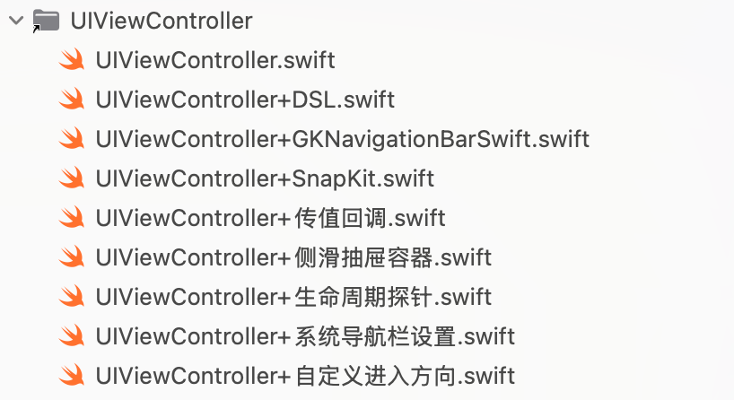
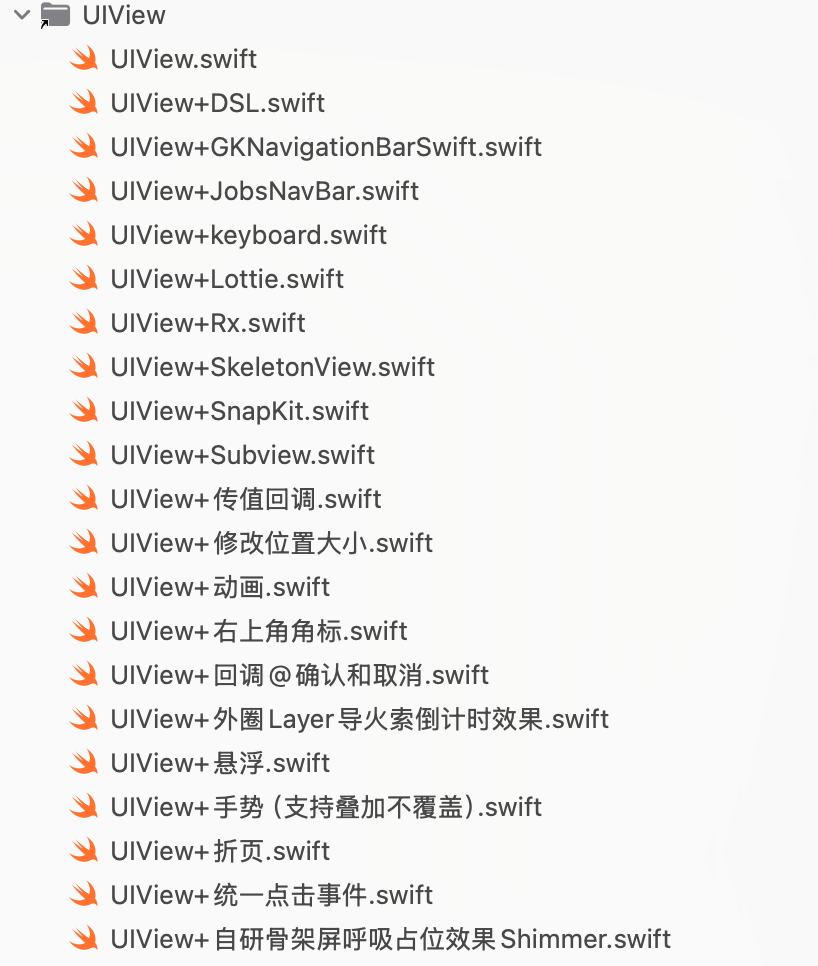
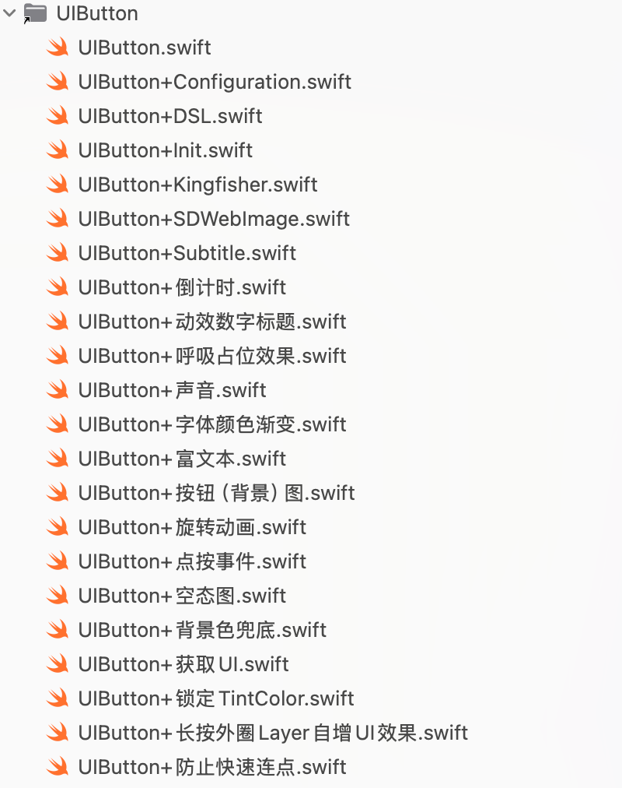
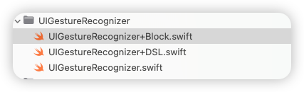
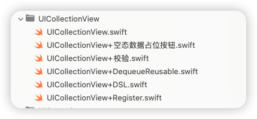
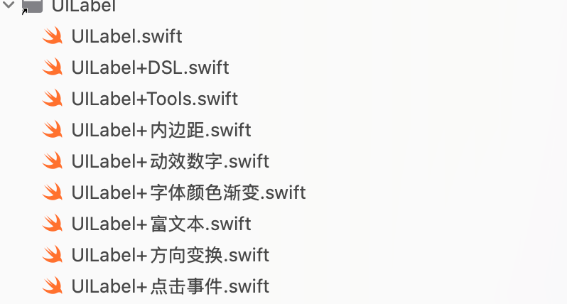
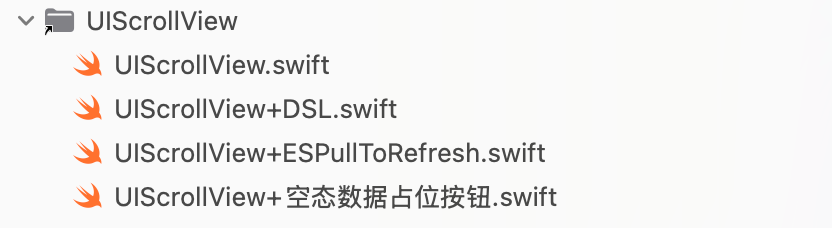
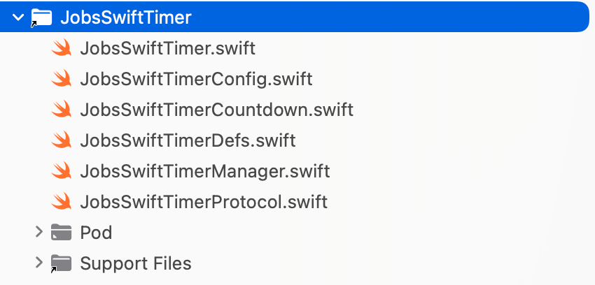
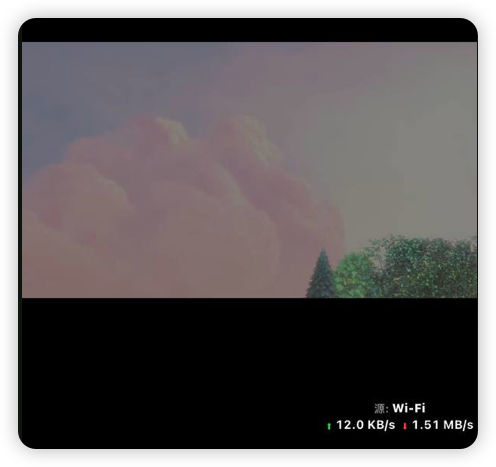
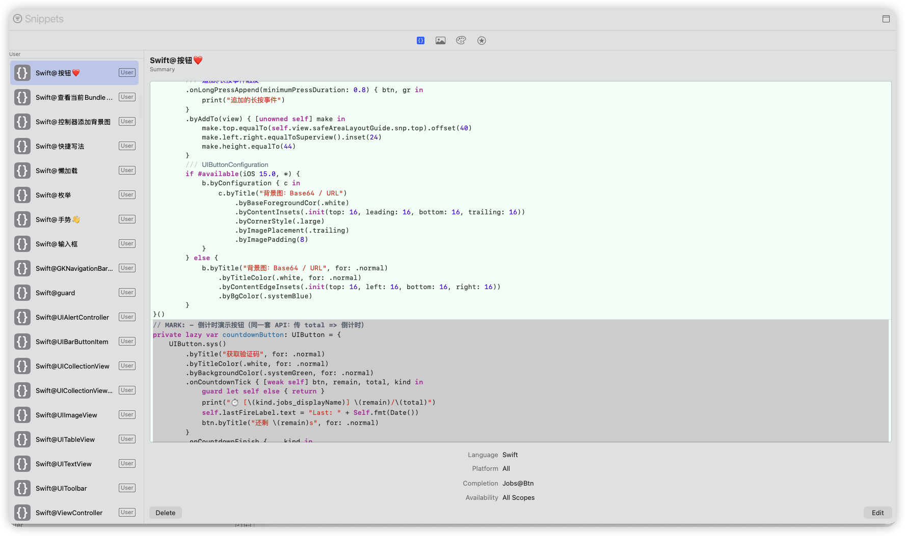

一、一些基本的原则#
1、不到万不得已，不要用Objc库#
- 既然是Swift工程，那么就尽可能的不要调用Objc库，否则我们为什么不用Objc写工程项目？不要既当又立。特别是在有优秀平替的情况下。相信互联网是在不断向前发展的，新出的轮子可能稳定性来讲可能不如老旧的（特别是那种很多年不更新的库，不到万不得已，慎用！），但是从调用和内存包括向前兼容等方面，一定是优于老旧框架的。否则为什么要开发新版本？即便是Apple公司，也是看到了Objc的一些不足，所以才下了很大的决心从Objc迁移到Swift，相信迁移所造成的各方损耗和带来的优势，也是经过各方多轮评估后才做的取舍！
- Objc库需要导入头文件，而且头文件的导入在编译阶段同样存在循环引用的问题（编译的时候，一定是按照加载的顺序，自上而下的编译），那么在某些极端的情况下，引入的位置不对，就会造成编译不通过（亲测）。而Swift在工程内部不需要导入文件，除非在不同工程（跨域），比如利用CocoaPods管理的第三方才需要进行导入。所以，既然是系统做了优化的，我们就要顺势而为。
- 导入库，一般情况下，它会向后兼容，导入一些老旧的
*.framework库，造成打包体积过大的隐患（并不能每次都精确复现，这里只是讲风险与隐患）。这里的一个例子就是过期的模拟器配件。老旧的Api只要你调用了就一定会指向老旧的*.framework，会影响打包大小，但是不一定影响运行时的内存情况 - 对于一些老旧库（超过5年不维护的库）如果实在要用，就需要手动集成自项目，而不是CocoaPods管理
2、用开源播放器#
- 市面上，有开源的音视频播放器
- 强烈建议不要用腾讯等中国大陆大厂出品的播放器
- 魔改同样需要学习成本
- 对核心的部分做了不同程度的封装
- 内容过滤（可能今天有种声音是说海外版不管，但是如果收紧，是不是我们全不要推翻重来？）
- 播放器用大厂SDK的支持方观点：能最小成本接入
- 坚持自研播放器的观点：
- 播放器的目的：对特定格式里面蕴含的信息，进行编解码。播放的特效，是一个文件（或许是
*.json格式，亦或许是特有格式） - 能完全从底层开始修改，方便未来对视频流进行加/解密 （反爬，反编译）
- 大厂播放器，可能也不方便魔改（可能关键部分早已封装成
*.framework或者*.a） - 如果大厂播放器政策有所改变，进行业务收紧，我们也需要较大开销去应对这种变化（iOS/Android2端）如果多个App，每个App内部我们都需要进行替换
- 播放器的目的：对特定格式里面蕴含的信息，进行编解码。播放的特效，是一个文件（或许是
二、我对iOS开发的认知#
- 方向隶属于大前端
- 前端相对于后段的特点
- 数据轻量级，一般不负责存储，或者是只存储轻量级的数据。除非那种国民级App（但他们都有架构组，框架内部维护使用，极少公开）
- 后端的语言可以万年Java8（语言IDE、SDK层面）相对于前端更加的稳定（前端3个月一次小更新，5个月一次大更新）
- 每个人对于需求理解的方式，包括二次封装的Api粒度认识不统一
- 前端对于一些业务层面的数据计算不需要太关心，主要精力应该集中于UI绘制渲染上
- 后端原则情况下，是不信任前端发送的任何数据的（看具体项目的安全阀值，容错度）
- 充分利用UIButton的便捷性，使其作为一个UI容器，合理的利用此UI控件的内部子控件，有利于去节省代码，方便拓展。内部携带：
- 背景图层、
- 一个子UIImageView
- 主标题Label
- 副标题Label
- 绘制UI + 数据请求 + 数据处理 == 成品
- 数据处理：[利用quicktype自动建立数据模型]()
三、我的构架方案#
1、选用的（外源）第三方框架#
-
基础配置框架
- ReactiveSwift 新版本支持 arm64 模拟器
- RxCocoa
- RxRelay
- NSObject+Rx
-
UI约束
-
网络请求框架（多线程异步二次封装）
- YTKNetwork：Objc库，并不建议用，但是他对AFNetworking(已永久停更)进行了一个很好的二次封装（封装点在于开辟多线程以应对一个页面上多个请求的特殊局面）。而Swift平台上的请求框架Alamofire还未对此场景进行深入的兼容
-
图片处理（异步）
- Kingfisher Swift 平台上对于的 SDWebImage 平替
-
动画（播放器）
-
音视频播放器
-
聊天工具
- LiveChat 需付费
-
一些工具类
- 一些优秀的UI库
- JXSegmentedView： 子控制器切换
- ESPullToRefresh：Swift 平台 MJRefresh 平替（暂不支持水平特征）
- JXBanner：轮播图
- LunarSwift：无第三方依赖的日历工具
- CoreXLSX：Excel
- FSPopoverView：下拉三角小菜单
- SwiftEntryKit：用 Swift 编写的简单而功能强大的内容展示器
- AMPopTip：自定义弹出框的弹出方向以及指向其原点的箭头、颜色、边框半径和字体
- SkeletonView：骨架屏/闪动占位
- SwiftMessages：非常灵活的 UIKit 和 SwiftUI 视图和视图控制器展示库
- ScreenProtectorKit：防止屏幕截图并保护后台应用程序快照
- PhoneNumberKit：电话号码工具包：用于解析、格式化和验证国际电话号码。灵感来源：
Google.libphonenumber - IQKeyboardManagerSwift
- 一些优秀的UI库
2、我的封装（重点）#
2.1、对UIViewController的封装#

-
解决某些情况下，多次push或者present的Bug
- 正向push带参传值
- 自定义出现的方向
- 自定义出现的方式是push还是present
- 退出页面需要回传的参数
DemoDetailVC() .byData("https://www.baidu.com") .byDirection(.fromBottom) // 👈 下 .byPush(self) .byCompletion { print("❤️结束❤️ fromBottom") }DemoDetailVC() .byData(3.14)// 基本数据类型 .onResult { name in print("回来了 \(name)") } .byPresent(self) .byCompletion{ print("结束") }
2.2、对UIView层的封装格式#

-
懒加载+代码块，在实际用的地方利用这个
UIView的alpha或者hidden属性进行唤起 -
利用
byAddTo将约束全部写进此闭包中，代码不再割裂。因为约束也是对此UI控件的补充说明private lazy var tvBlue: UITextView = { [unowned self] in UITextView() .byAttributedText(NSMutableAttributedString( string: "🔗 默认蓝色链接（系统样式）：", attributes: [ .font: UIFont.systemFont(ofSize: 15), .foregroundColor: UIColor.secondaryLabel ]) .add(NSAttributedString( string: " Apple 官网", attributes: [ .link: URL(string: "https://www.apple.com")!, .font: UIFont.boldSystemFont(ofSize: 16) ])) .add(NSAttributedString( string: "\n客服电话：400-123-4567", attributes: [.font: UIFont.systemFont(ofSize: 15)] ))) .byEditable(false) .bySelectable(true) .byDataDetectorTypes([.link, .phoneNumber]) // 系统自动识别 .byTextContainerInset(UIEdgeInsets(top: 8, left: 10, bottom: 8, right: 10)) .byRoundedBorder(color: .systemGray4, width: 1, radius: 8) .byAddTo(self.view) { [unowned self] make in make.top.equalTo(self.tv.snp.bottom).offset(12) // 紧跟在 tv 下面 make.centerX.equalToSuperview() make.height.equalTo(36) } }() -
旋转视图
btn.onTap { [weak self] btn in guard let _ = self else { return } btn.playTapBounce(haptic: .light) // 👈 临时放大→回弹（不注册任何手势/事件） if btn.jobs_isSpinning { // 暂停旋转 btn.bySpinPause() // 暂停计时（保留已累计秒，不重置） btn.timer?.pause() // ✅ 推荐：你的统一内核挂在 button.timer 上 // 如果你有封装方法，则用：btn.pauseTimer() JobsToast.show( text: "已暂停旋转 & 计时", config: .init().byBgColor(.systemGreen.withAlphaComponent(0.9)).byCornerRadius(12) ) } else { // 恢复旋转 btn.bySpinStart() // 恢复计时（从暂停处继续累加） btn.timer?.resume() // ✅ 推荐 // 如果你有封装方法，则用：btn.resumeTimer() JobsToast.show( text: "继续旋转 & 计时", config: .init().byBgColor(.systemGreen.withAlphaComponent(0.9)).byCornerRadius(12) ) } } -
悬浮视图
UIView().bySuspend { cfg in cfg .byContainer(view) .byFallbackSize(CGSize(width: 88, height: 44)) .byDocking(.nearestEdge) .byInsets(UIEdgeInsets(top: 20, left: 16, bottom: 34, right: 16)) .byHapticOnDock(true) }UIView().suspend( .default .byContainer(view) .byFallbackSize(CGSize(width: 88, height: 44)) .byDocking(.nearestEdge) .byInsets(UIEdgeInsets(top: 20, left: 16, bottom: 34, right: 16)) .byHapticOnDock(true) ) -
角标提示@右上角提示文案
-
展示
-
右上角自定义文字
UIView().byCornerBadgeText("NEW") { cfg in cfg.byOffset(.init(horizontal: -6, vertical: 6)) .byInset(.init(top: 2, left: 6, bottom: 2, right: 6)) .byBgColor(.systemRed) .byFont(.systemFont(ofSize: 11, weight: .bold)) .byShadow(color: UIColor.black.withAlphaComponent(0.25), radius: 2, opacity: 0.6, offset: .init(width: 0, height: 1)) } -
右上角小红点
UIView().byCornerDot(diameter: 10, offset: .init(horizontal: -4, vertical: 4))// 红点
-
-
关闭
UIButton(type: .system) /// 事件触发@点按 .onTap { [weak self] sender in guard let self else { return } sender.isSelected.toggle() if sender.isSelected { sender.byCornerDot(diameter: 10, offset: .init(horizontal: -4, vertical: 4)) } else { sender.removeCornerBadge() } JobsToast.show( text: "优惠@点按事件", config: JobsToast.Config() .byBgColor(.systemGreen.withAlphaComponent(0.9)) .byCornerRadius(12) ) }
-
2.3、对UIButton按钮的封装#
2.3.1、利用分类作用于UIButton#

private lazy var exampleButton: UIButton = {
UIButton.sys()
/// 锁死标题颜色：任何 state 都保持同一种颜色，不跟 tint / 系统态自动变化
.byLockTitleColor(.red)
/// 图片吃 tint，但 tint 锁死为某个颜色
.byLockTintColor(.red)
/// 只锁 Background（背景色不随状态变）
.byLockBackgroundColor(.red)
/// 只锁 Border（边框色不随状态变，iOS 15+）
.byLockBorderColor(.red)
/// 背景色@按照不同的状态
.byBackgroundColor(.systemGreen, for: .normal)
.byBackgroundColor("#2F2F2F".cor, for: .disabled) // 对应按钮不可点击的状态
/// 背景图片
.byBackgroundImage("背景图片".img, for: .normal)
/// 字体颜色渐变@只处理主标题（titleLabel）
.byGradientMainTitle(colors: [UIColor(r: 221, g: 221, b: 221), UIColor(r: 127, g: 126, b: 126)], direction: .leftToRight)
/// 字体颜色渐变@只副标题渐变
.byGradientSubtitle(colors: [UIColor(r: 221, g: 221, b: 221), UIColor(r: 127, g: 126, b: 126)], direction: .topLeftToBottomRight)
/// 字体颜色渐变@主副一致
.byGradientTitlesSame(colors: [UIColor(r: 221, g: 221, b: 221), UIColor(r: 127, g: 126, b: 126)], direction: .leftToRight)
/// 普通字符串@设置主标题
.byTitle("显示", for: .normal)
.byTitle("隐藏", for: .selected)
/// 字体颜色@按照不同的状态
.byTitleColor("#2F2F2F".cor, for: .normal)
.byTitleColor("#BBBBBB".cor, for: .disabled) // 对应按钮不可点击的状态
.byTitleFont(.systemFont(ofSize: 16, weight: .medium))
/// 普通字符串@设置副标题
.bySubTitle("显示", for: .normal)
.bySubTitle("隐藏", for: .selected)
.bySubTitleColor(.systemBlue, for: .normal)
.bySubTitleColor(.systemRed, for: .selected)
.bySubTitleFont(.systemFont(ofSize: 16, weight: .medium))
/// 富文本字@设置主标题
.byRichTitle(JobsRichText.make([
JobsRichRun(.text("¥99")).font(.systemFont(ofSize: 18, weight: .semibold)).color(.systemRed),
JobsRichRun(.text(" /月")).font(.systemFont(ofSize: 16)).color(.white)
]))
/// 富文本字@设置副标题
.byRichSubTitle(JobsRichText.make([
JobsRichRun(.text("原价 ")).font(.systemFont(ofSize: 12)).color(.white.withAlphaComponent(0.8)),
JobsRichRun(.text("¥199")).font(.systemFont(ofSize: 12, weight: .medium)).color(.systemYellow)
]))
/// 主标题和副标题之间的距离（兼容 iOS12+）
.byTitlePadding(4.h)
/// 按钮图片@图文关系
.byImage("eye.slash".sysImg, for: .normal) // 未选中图标
.byImage("eye".sysImg, for: .selected) // 选中图标
/// iOS15专用@清除偏移
.byClearConfigurationBackground()
/// 按钮@图文位置关系
.byImagePlacement(.top ,padding: 5) // 通用（向下兼容）
.byImagePlacementLegacy(.top, padding: 5) // 只满足iOS13以下
/// 按钮图文间距@iOS13（与下文互斥）
.byTitleEdgeInsets(UIEdgeInsets(top: 0, left: 6, bottom: 0, right: -6))
/// 按钮图文内边距@iOS12（与上文互斥）
.byContentEdgeInsets(UIEdgeInsets(top: 4, left: 8, bottom: 4, right: 8))
/// 点击@播放声音
.byTapSound("Sound.wav")
/// 普通@点按事件触发
.onTap { [weak self] sender in
guard let self else { return }
sender.isSelected.toggle()
// 文字与图标自动切换
self.passwordTF.isSecureTextEntry.toggle()
self.passwordTF.togglePasswordVisibility()
print("👁 当前状态：\(sender.isSelected ? "隐藏密码" : "显示密码")")
}
/// 追加@点按事件触发
.onTapAppend{ sender in
print("追加的点按事件")
}
/// 右上角提示文案@小红点
.byCornerDot(diameter: 10, offset: .init(horizontal: -4, vertical: 4))// 红点
/// 右上角提示文案@文字
.byCornerBadgeText("NEW") { cfg in
cfg.byOffset(.init(horizontal: -6, vertical: 6))
.byInset(.init(top: 2, left: 6, bottom: 2, right: 6))
.byBgColor(.systemRed)
.byFont(.systemFont(ofSize: 11, weight: .bold))
.byShadow(color: UIColor.black.withAlphaComponent(0.25),
radius: 2,
opacity: 0.6,
offset: .init(width: 0, height: 1))
}
/// 普通@长按事件触发
.onLongPress(minimumPressDuration: 0.8) { btn, gr in
if gr.state == .began {
btn.alpha = 0.6
print("长按开始 on \(btn)")
} else if gr.state == .ended || gr.state == .cancelled {
btn.alpha = 1.0
print("长按结束")
}
}
/// 追加@长按事件触发
.onLongPressAppend(minimumPressDuration: 0.8) { btn, gr in
print("追加的长按事件")
}
.byAddTo(view) { [unowned self] make in
make.top.equalTo(self.view.safeAreaLayoutGuide.snp.top).offset(40)
make.left.right.equalToSuperview().inset(24)
make.height.equalTo(44)
}
.byBorderColor(.cyan)
.byBorderWidth(0.5)
.byMasksToBounds(YES)
.byClipsToBounds(YES)
.byCornerRadius(8.h)
/// UIButtonConfiguration
if #available(iOS 15.0, *) {
b.byConfiguration { c in
c.byTitle("背景图：Base64 / URL")
.byBaseForegroundCor(.white)
.byContentInsets(.init(top: 16, leading: 16, bottom: 16, trailing: 16))
.byCornerStyle(.large)
.byImagePlacement(.trailing)
.byImagePadding(8)
}
} else {
b.byTitle("背景图：Base64 / URL", for: .normal)
.byTitleColor(.white, for: .normal)
.byContentEdgeInsets(.init(top: 16, left: 16, bottom: 16, right: 16))
.byBgColor(.systemBlue)
}
}()-
风险提示：一旦用了最新的
UIButtonConfiguration可能影响到老旧的Api的使用（直观感受，老旧Api配置的按钮将会不起效） -
可视UI（向下兼容，且启用
UIButtonConfiguration）- 普通文本配置主副标题（文本内容、文本字体颜色大小）
- 富文本配置主副标题
- 设置背景图片
- 设置背景色
- 前景图文位置关系（空间位置和距离）
- 操作Layer层：切角、描边
- 锁住tint
- snapkit约束
- 右上角提示（参考Objc库PPBadgeView）
-
事件
-
（点按、长按）事件封装 ➤ 绕过@selector和Target
-
（点按、长按）事件追加
-
点击播放声音
-
主副标题的数字动效
- 小数点后数字的处理（保留多少有效数字、定义小数部分的字体颜色大小）
- 小数点之前可以选择开启分隔符（国际3位、中国4位）
import JobsByUIKit private let defaultStart: Double = 1234567890 /// 数字动效按钮@主标题（普通文本） private lazy var btn_1: UIButton = { UIButton() .byLockBackgroundColor(.clear) .byTitle("\(Int(defaultStart))", for: .normal) .byTitleColor(.white, for: .normal) .byTitleFont(.DINPro.Bold(14.fz)) .byImage("钱".img, for: .normal) .byImagePlacement(.right ,padding: 5.w) // 通用（向下兼容） /// 数字动效按钮@关键配置 .byAnimationTitleConfig({ cfg in cfg.byDuration(10) // 动画的作用时间 .byFps(60) // .byTitleColor(.white, for: .normal) .byTitleFont(.DINPro.Bold(14.fz)) .byStartValue("\(Int(0))") // 如果这个地方没有配置，则从按钮的主标题取值 .byEndValue("\(Int(1000))") // 如果这个地方没有配置，则从按钮的主标题取值 .byShowsDecimals(true)// 是否展示小数（默认不展示） .bySeparate(",")// 分隔符是 , 不写也行 .byDecimals(2)// 保留2位小数（默认） .byTitleDecimalsCor(.red) .byTitleDecimalsFont(.DINPro.Bold(12.fz)) }) .onTap { [weak self] sender in guard let self else { return } /// 启动动效@回调倒计时行为：进行中（多次） sender.byStartAnim { m in print("title:", m.title ?? "nil", "sub:", m.subTitle ?? "nil", "seconds:", m.seconds) } /// 启动动效@回调倒计时行为：结束（一次） .byEndAnim { "动画结束".tr.toast } } .byAddTo(topBarBackgroundView) { [unowned self] make in /// TODO } }() /// 数字动效按钮@主标题（富文本） private lazy var btn_2: UIButton = { UIButton.sys() // 初始展示：你原来的 rich title 仍然可以保留（首次显示用） .byRichTitle(JobsRichText.make([ JobsRichRun(.text("¥99")).font(.systemFont(ofSize: 18, weight: .semibold)).color(.systemRed), JobsRichRun(.text(" /月")).font(.systemFont(ofSize: 16)).color(.white) ])) .byTitleColor(.white, for: .normal) .byImage("star.fill".sysImg, for: .normal) .byImagePlacement(.leading, padding: 8) .byBackgroundColor(.systemGreen) /// 数字动效按钮@关键配置➤主标题富文本Builder .byAnimationTitleConfig { cfg in cfg.byDuration(10) .byFps(60) .byStartValue("\(Int(0))") .byEndValue("\(Int(1000))") .byShowsDecimals(true) .bySeparate(",") .byDecimals(2) // 如果仍然希望 plain/fallback 的字体颜色也一致，可以保留 .byTitleColor(.white, for: .normal) .byTitleFont(.DINPro.Bold(14.fz)) .byTitleDecimalsCor(.red) .byTitleDecimalsFont(.DINPro.Bold(12.fz)) // 主标题整体富文本（¥ + 数字 + /月） .byTitleAttributedBuilder { text, decimalsRange, _ in // full: "¥1,234.56 /月" let full = "¥\(text) /月" let attr = NSMutableAttributedString(string: full) // 数字段（含 ¥）：红色 18 semibold let numberRange = NSRange(location: 0, length: 1 + (text as NSString).length) // "¥" + text attr.addAttributes([ .font: UIFont.systemFont(ofSize: 18, weight: .semibold), .foregroundColor: UIColor.systemRed ], range: numberRange) // 后缀段：白色 16 let suffixStart = numberRange.length let suffixRange = NSRange(location: suffixStart, length: (full as NSString).length - suffixStart) attr.addAttributes([ .font: UIFont.systemFont(ofSize: 16), .foregroundColor: UIColor.white ], range: suffixRange) // 小数段（如果存在）：DINPro 12 + 红色（只改小数部分，不影响整数） if let dr = decimalsRange { // decimalsRange 是在 text 里的 range，要平移到 full 里（前面多了一个 "¥"） let shifted = NSRange(location: 1 + dr.location, length: dr.length) attr.addAttributes([ .font: UIFont.DINPro.Bold(12.fz), .foregroundColor: UIColor.red ], range: shifted) };return attr } } .onTap { [weak self] sender in guard let self else { return } // 你这里读 tf 的 start/end 只是业务参数；真正动画起终值由 config 的 startValue/endValue 控制 // 如果你想“按输入框变更动画起终值”，需要在点击时重新调用 byAnimationTitleConfig 覆盖 start/end // 这里先按你原逻辑保留回调即可 sender.byStartAnim { m in print("title:", m.title ?? "nil", "sub:", m.subTitle ?? "nil", "seconds:", m.seconds) } .byEndAnim { "动画结束".tr.toast } } .byAddTo(contentView) { [unowned self] make in make.top.equalTo(tf3Start.snp.bottom).offset(10) make.left.right.equalToSuperview().inset(16) make.height.equalTo(56) } }() /// 数字动效按钮@副标题（普通文本） private lazy var btn_3: UIButton = { UIButton.sys() .byTitle("会员价格", for: .normal) .byTitleColor(.white, for: .normal) .byTitleFont(.systemFont(ofSize: 16, weight: .medium)) .bySubTitle("原价 ¥199 /月", for: .normal) .bySubTitleColor(.white.withAlphaComponent(0.85), for: .normal) .bySubTitleFont(.systemFont(ofSize: 13)) .byBackgroundColor("#2F2F2F".cor) /// 数字动效按钮@关键配置 .byAnimationSubTitleConfig({ cfg in cfg.byDuration(10) // 动画的作用时间 .byFps(60) // .bySubTitleColor(.blue) .bySubTitleFont(.DINPro.Bold(14.fz)) .byStartValue("\(Double(tf1Start.text ?? "") ?? 99)") // 如果这个地方没有配置，则从按钮的主标题取值 .byEndValue("\(Double(tf1End.text ?? "") ?? 199)") // 如果这个地方没有配置，则从按钮的主标题取值 .byShowsDecimals(true)// 是否展示小数（默认不展示） .bySeparate(",")// 分隔符是 , 不写也行 .byDecimals(2)// 保留2位小数（默认） .bySubTitleDecimalsCor(.red) .bySubTitleDecimalsFont(.DINPro.Bold(12.fz)) }) .onTap { [weak self] sender in guard let self else { return } /// 启动动效@回调倒计时行为：进行中（多次） sender.byStartAnim { m in print("title:", m.title ?? "nil", "sub:", m.subTitle ?? "nil", "seconds:", m.seconds) } /// 启动动效@回调倒计时行为：结束（一次） .byEndAnim { "动画结束".tr.toast } } .byAddTo(contentView) { [unowned self] make in make.top.equalTo(tf2Start.snp.bottom).offset(10) make.left.right.equalToSuperview().inset(16) make.height.equalTo(64) } }() /// 数字动效按钮@副标题（富文本） private lazy var btn_4: UIButton = { UIButton.sys() .byTitle("限时折扣", for: .normal) .byTitleColor(.white, for: .normal) .byTitleFont(.systemFont(ofSize: 16, weight: .medium)) // 初始展示：先给一个普通副标题（首次显示用） .bySubTitle("倒计时 199 秒", for: .normal) .bySubTitleColor(.white.withAlphaComponent(0.85), for: .normal) .bySubTitleFont(.systemFont(ofSize: 13)) .byImage("clock".sysImg, for: .normal) .byImagePlacement(.leading, padding: 8) .byBackgroundColor(.systemPurple) .byCornerRadius(10) /// 数字动效按钮@关键配置➤副标题富文本Builder .byAnimationSubTitleConfig { cfg in cfg.byDuration(10) .byFps(60) // 这里的 start/end 才是副标题动画的数值来源 .byStartValue("199") .byEndValue("9") // 倒计时一般不需要小数，这里关掉 .byShowsDecimals(false) // 可选：给副标题的基础样式（非 builder 场景兜底） .bySubTitleColor(.white.withAlphaComponent(0.85), for: .normal) .bySubTitleFont(.systemFont(ofSize: 13)) // ✅ 副标题整体富文本： "倒计时 199 秒" .bySubTitleAttributedBuilder { text, _, _ in let prefix = "倒计时 " let suffix = " 秒" let full = prefix + text + suffix let attr = NSMutableAttributedString(string: full) // 全段默认（灰白 13） attr.addAttributes([ .font: UIFont.systemFont(ofSize: 13), .foregroundColor: UIColor.white.withAlphaComponent(0.85) ], range: NSRange(location: 0, length: (full as NSString).length)) // 数字段强调（白色 13 medium，或你想要的高亮色） let numberRange = NSRange(location: (prefix as NSString).length, length: (text as NSString).length) attr.addAttributes([ .font: UIFont.systemFont(ofSize: 13, weight: .semibold), .foregroundColor: UIColor.white ], range: numberRange) return attr } } .onTap { [weak self] sender in guard let self else { return } sender.byStartAnim { m in print("title:", m.title ?? "nil", "sub:", m.subTitle ?? "nil", "seconds:", m.seconds) } .byEndAnim { "动画结束".tr.toast } } .byAddTo(contentView) { [unowned self] make in make.top.equalTo(tf4Start.snp.bottom).offset(10) make.left.right.equalToSuperview().inset(16) make.height.equalTo(64) make.bottom.equalToSuperview().offset(-24) } }()
-
2.3.2、利用继承作用于JobsButton#
解决在某些iOS版本向下兼容的情况下，无法把握
UIButton内部控件的生命周期，导致UI错版的问题
private lazy var btn1: JobsButton = {
JobsButton()
.byMode(.imageTopTextBottom)
.byTitleLabel { lab in
lab.byText("上图下文")
.byTextColor(.red)
}
.bySubTitleLabel { lab in
lab.byText("image -> title -> subtitle")
.byTextColor(.blue)
}
// 前景图：内部 foregroundImageView（链式不丢 self）
.byForegroundImageView { iv in
iv.byContentMode(.scaleAspectFill)
.byClipsToBounds()
.kf_setImage("https://picsum.photos/200?random=111", placeholder: "Ani".img)
}
// 背景图：JobsButton 自己是 UIImageView
.byContentMode(.scaleAspectFill)
.byClipsToBounds()
.kf_setImage("https://picsum.photos/600/200?random=11", placeholder: "Ani".img)
.byImageTitleSpacing(6)
.byTitleSubtitleSpacing(2)
.byContentInsets(.zero)
.byForegroundImageFixedSize(true)
.addTapActionAppend { _ in
print("btn1 tap #1")
"点击了悬浮按钮：上图下文（tap #1）".toast
}
.addTapActionAppend { _ in
print("btn1 tap #2 (append)")
"点击了悬浮按钮：上图下文（tap #2 叠加）".toast
}
.addLongPressActionAppend { gr in
guard gr.state == .began else { return }
print("btn1 longPress #1 began")
"长按了悬浮按钮：上图下文（longPress #1）".toast
}
.addLongPressActionAppend { gr in
guard gr.state == .began else { return }
print("btn1 longPress #2 began (append)")
"长按了悬浮按钮：上图下文（longPress #2 叠加）".toast
}
.byBorderColor(.cyan)
.byBorderWidth(0.5)
.byMasksToBounds(YES)
.byClipsToBounds(YES)
.byCornerRadius(8.h)
.byAddTo(view) { [unowned self] make in
make.top.equalTo(self.hintLabel.snp.bottom).offset(18)
make.left.equalToSuperview().offset(horizontalInset)
make.right.equalToSuperview().inset(horizontalInset)
make.height.equalTo(itemHeight)
}
}()2.4、对UIGestureRecognizer手势的封装#

-
绕过@selector和Target，只关心加载的视图对象，以及响应方法
-
// MARK: - 点击 Tap UIView().jobs_addGesture( UITapGestureRecognizer .byConfig { gr in print("Tap 触发 on: \(String(describing: gr.view))") } .byTaps(2) // 双击 .byTouches(1) // 单指 .byCancelsTouchesInView(true) .byEnabled(true) .byName("customTap") ) -
// MARK: - 长按 LongPress UIView().addGestureRecognizer( UILongPressGestureRecognizer .byConfig { gr in if gr.state == .began { print("长按开始") } else if gr.state == .ended { print("长按结束") } } .byMinDuration(0.8) // 最小按压时长 .byMovement(12) // 允许移动距离 .byTouches(1) // 单指 ) -
// MARK: - 拖拽 Pan UIView().jobs_addGesture( UIPanGestureRecognizer .byConfig { gr in let p = (gr as! UIPanGestureRecognizer).translation(in: gr.view) if gr.state == .changed { print("拖拽中: \(p)") } else if gr.state == .ended { print("拖拽结束") } } .byMinTouches(1) .byMaxTouches(2) .byCancelsTouchesInView(true) ) -
// MARK: - 轻扫 Swipe（单方向） UIView().jobs_addGesture( UISwipeGestureRecognizer .byConfig { _ in print("👉 右滑触发") } .byDirection(.right) .byTouches(1) ) // MARK: - 轻扫 Swipe（多方向） let swipeContainer = UIView() swipeContainer.jobs_addGesture( UISwipeGestureRecognizer .byConfig { _ in print("← 左滑") } .byDirection(.left) ) swipeContainer.jobs_addGesture( UISwipeGestureRecognizer .byConfig { _ in print("→ 右滑") } .byDirection(.right) ) swipeContainer.jobs_addGesture( UISwipeGestureRecognizer .byConfig { _ in print("↑ 上滑") } .byDirection(.up) ) swipeContainer.jobs_addGesture( UISwipeGestureRecognizer .byConfig { _ in print("↓ 下滑") } .byDirection(.down) ) -
// MARK: - 捏合 Pinch UIView().jobs_addGesture( UIPinchGestureRecognizer .byConfig { _ in } .byOnScaleChange { gr, scale in if gr.state == .changed { print("缩放比例: \(scale)") } } .byScale(1.0) ) -
// MARK: - 旋转 Rotate UIView().jobs_addGesture( UIRotationGestureRecognizer .byConfig { _ in } .byOnRotationChange { gr, r in if gr.state == .changed { print("旋转角度(弧度): \(r)") } } .byRotation(0) ) -
// MARK: - 直接设置手势（已锚定视图） let views = UIView() .addTapAction { gr in print("点击 \(gr.view!)") } .addLongPressAction { gr in if gr.state == .began { print("长按开始") } } .addPanAction { gr in let p = (gr as! UIPanGestureRecognizer).translation(in: gr.view) print("拖拽中: \(p)") } .addPinchAction { gr in let scale = (gr as! UIPinchGestureRecognizer).scale print("缩放比例：\(scale)") } .addRotationAction { gr in let rotation = (gr as! UIRotationGestureRecognizer).rotation print("旋转角度：\(rotation)") }
-
2.5、对UITextView的封装（含输入监控过滤）#
-
输入监控 + 退格监控
private lazy var tv1: UITextView = { UITextView() .byFont(.systemFont(ofSize: 16)) .byKeyboardType(.default) .byEditable(true) .bySelectable(true) .byTextContainerInset(UIEdgeInsets(top: 8, left: 10, bottom: 8, right: 10)) .byRoundedBorder(color: .systemGray4, width: 1, radius: 8) .byPlaceHolder("哈哈哈哈".tr) .byPlaceHolderCor(.blue) .byPlaceHolderFont(.boldSystemFont(ofSize: 15)) .byHintLimit(12) { lb in lb.byFont(.monospacedDigitSystemFont(ofSize: 11, weight: .semibold)) .byTextColor(.red) } .byOnInput(limit: nil) { [unowned self] char, value, mode, isLimited, text ,tv in // text 就是当前 UITextView.text（保证不是 nil，空就是 ""） // value 仍然是“本次变更后的值”（由监听器计算出来的 new） // char：删除/回车时为 "" // mode：space/delete/return/normal // isLimited：是否设置了限制（limit != nil） print("✏️ char='\(char)' value='\(value)' mode=\(mode) limited=\(isLimited) text='\(text)'") } .byBeginEditing { value in print("✍️ begin:", value) } .byEndEditing { value in print("✅ end:", value) } .byAddTo(contentView) { [unowned self] make in make.top.equalTo(title1.snp.bottom).offset(8) make.left.equalToSuperview().offset(16) make.right.equalToSuperview().offset(-16) make.height.equalTo(100) } }() -
配合富文本
private lazy var tvRed: UITextView = { UITextView() .byAttributedText(NSMutableAttributedString( string: "🔴 自定义红色链接：", attributes: [.font: UIFont.systemFont(ofSize: 15), .foregroundColor: UIColor.secondaryLabel] ).byAdd(NSAttributedString( string: " Jobs 官网", attributes: [.link: URL(string: "https://www.google.com")!, .font: UIFont.boldSystemFont(ofSize: 16)] )).byAdd(NSAttributedString( string: "\n客服电话：400-123-4567", attributes: [.font: UIFont.systemFont(ofSize: 15)] ))) .byEditable(false) .bySelectable(true) .byDataDetectorTypes([.link, .phoneNumber]) .byLinkTextAttributes([ .foregroundColor: UIColor.systemRed, .underlineStyle: NSUnderlineStyle.single.rawValue ]) .byTextContainerInset(UIEdgeInsets(top: 8, left: 10, bottom: 8, right: 10)) .byRoundedBorder(color: .systemGray4, width: 1, radius: 8) .byBeginEditing { value in print("✍️ begin:", value) } .byEndEditing { value in print("✅ end:", value) } .byAddTo(contentView) { [unowned self] make in make.top.equalTo(tvBlue.snp.bottom).offset(12) make.left.right.equalTo(tv1) make.height.equalTo(110) } }()
2.6、对UITextField输入框的封装#
2.6.1、利用分类，对UITextField输入框的封装（含输入监控过滤）#
-
密码输入框
/// 密码输入框 private lazy var passwordTF: UITextField = { UITextField() .byPlaceholder("请输入密码（最长 5）") .byFont(.systemFont(ofSize: 16)) .byTextColor(.label) .byKeyboardType(.default) .byReturnKeyType(.done) .byClearButtonMode(.whileEditing) .byDelegate(self) .byLeftView(UIView(frame: CGRect(x: 0, y: 0, width: 12, height: 1))) .byLeftViewMode(.always) .bySecureTextEntry(true) // MARK: Jobs 输入监听（无 Rx）—— 密码：最长 5，只做监听 .byBeginEditing { value in print("✍️ password begin:", value) } .byOnInput(limit: 5) { [weak self] char, value, mode, isLimited in guard let self else { return } let current = self.passwordTF.text ?? value print("🔐 char='\(char)' value='\(current)' mode=\(mode) limited=\(isLimited)") } .byEndEditing { value in print("✅ password end:", value) } .byAddTo(view) { [unowned self] make in make.top.equalTo(emailTF.snp.bottom).offset(16) make.left.right.height.equalTo(emailTF) } .byBorderColor(.cyan) .byBorderWidth(0.5) .byMasksToBounds(YES) .byClipsToBounds(YES) .byCornerRadius(8.h) }() -
邮箱输入框
/// 邮箱输入框 private lazy var emailTF: UITextField = { UITextField() .byPlaceholder("请输入邮箱（去空格 / 最长 8）") .byFont(.systemFont(ofSize: 16)) .byTextColor(.label) .byKeyboardType(.emailAddress) .byReturnKeyType(.next) .byClearButtonMode(.whileEditing) .byDelegate(self) .byLeftView(UIView(frame: CGRect(x: 0, y: 0, width: 12, height: 1))) .byLeftViewMode(.always) // MARK: Jobs 输入监听（无 Rx）—— 邮箱：去空格 + 最长 8 + 简单规则 .byBeginEditing { value in print("✍️ email begin:", value) } .byOnInput(limit: 8) { [weak self] char, value, mode, isLimited in guard let self else { return } let trimmed = value.trimmingCharacters(in: .whitespaces) if trimmed != value { self.emailTF.text = trimmed } let current = self.emailTF.text ?? trimmed let ok = current.count >= 3 && current.contains("@") print("📧 char='\(char)' value='\(current)' mode=\(mode) limited=\(isLimited) ok=\(ok)") } .byEndEditing { value in print("✅ email end:", value) } .byAddTo(view) {[unowned self] make in make.left.equalToSuperview().offset(16) make.right.equalToSuperview().offset(-16) make.height.equalTo(44) if view.jobs_hasVisibleTopBar() { make.top.equalTo(self.gk_navigationBar.snp.bottom).offset(10) } else { make.top.equalTo(view.safeAreaLayoutGuide.snp.top) } } .byBorderColor(.cyan) .byBorderWidth(0.5) .byMasksToBounds(YES) .byClipsToBounds(YES) .byCornerRadius(8.h) }()
2.6.2、利用继承，对UITextField输入框的封装 ➤ JobsTextField#
在
UITextField下面加了一个UImageView作为父视图，方便设置边距
private lazy var titleTF: JobsTextField = {
JobsTextField()
.byTextFieldConfig({ textField in
textField
.byPlaceholder("请输入内容（必填）")
.byPlaceholderFont(.PingFangSC.Regular(14))
.byPlaceholderColor("#BBBBBB".cor)
.byFont(.PingFangSC.Regular(14))
.byTextColor("#BBBBBB".cor)
.byKeyboardType(.default)
.byReturnKeyType(.next)
.byClearButtonMode(.whileEditing)
.byRightView(
UIView(frame: CGRect(x: 0, y: 0, width: 20, height: 20))
.byAddSubviewRetSuper(
UIButton.sys()
.bySize(CGSizeMake(20, 20))
/// 背景图片
.byBackgroundImage("删除".img, for: .normal)
/// 普通@点按事件触发
.onTap { [weak self] sender in
guard let self else { return }
sender.isSelected.toggle()
titleTF.text = ""
}
)
)
.byRightViewMode(.whileEditing)
/// 输入框由不活跃状态 ➤ 活跃状态 只调用一次
.byBeginEditing { value in
self.titleTF.byBorderColor("#C33E2D".cor)
.byBorderWidth(0.5)
.byMasksToBounds(YES)
print("✍️ email begin:", value)
}
/// 效果@等于父系方法UIControl.byAddAction.editingChanged，只不过比父系方法先调用
.byOnInput(limit: nil) { [weak self] char, value, mode, isLimited in
guard let self else { return }
self.buttonStatusToChange()
}
.byEndEditing { value in
print("✅ email end:", value)
self.titleTF.byBorderColor("#eaeaea".cor)
}
})
.byInsetTop(14)
.byInsetLeft(12)
.byInsetRight(12)
.byInsetBottom(14)
.byAddTo(cardView) { [unowned self] make in
make.top.equalTo(typeRowView.snp.bottom).offset(AD(0))
make.leading.equalTo(cardView).offset(AD(16))
make.trailing.equalTo(cardView).offset(AD(-16))
make.height.equalTo(AD(44))
}
.byBorderColor("#eaeaea".cor)
.byBorderWidth(0.5)
.byMasksToBounds(YES)
.byClipsToBounds(YES)
.byCornerRadius(4.h)
}()2.7、对UIImageView的封装（暂时只展示Kingfisher ,当然 **SDWebImage **也有）#
-
UIImageView@字符串本地图/// UIImageView@字符串本地图 private lazy var localImgView: UIImageView = { UIImageView() .byImage("Ani".img) .byContentMode(.scaleAspectFill) .byClipsToBounds() .onTap { iv in toastBy("单击图片：\(iv)") } .onLongPress(minDuration: 0.8, movement: 12, touches: 1, name: "customLongPress") { iv, gr in switch gr.state { case .began: toastBy("长按开始 on \(iv)") case .ended, .cancelled, .failed: toastBy("长按结束 on \(iv)") default: break } } .byAddTo(scrollView) { [unowned self] make in make.top.equalTo(scrollView.contentLayoutGuide.snp.top).offset(10.h) make.left.equalTo(scrollView.frameLayoutGuide.snp.left).offset(20.w) make.right.equalTo(scrollView.frameLayoutGuide.snp.right).inset(20.w) make.height.equalTo(180.h) } }() -
UIImageView字符串网络图@Kingfisher/// UIImageView字符串网络图@Kingfisher private lazy var asyncImgView: UIImageView = { UIImageView() .byAsyncImageKF("https://picsum.photos/200/300", fallback: "唐老鸭".img) .byContentMode(.scaleAspectFill) .byClipsToBounds() .onTap { iv in toastBy("单击图片：\(iv)") } .onLongPress(minDuration: 0.8, movement: 12, touches: 1, name: "customLongPress") { iv, gr in switch gr.state { case .began: toastBy("长按开始 on \(iv)") case .ended, .cancelled, .failed: toastBy("长按结束 on \(iv)") default: break } } .byAddTo(scrollView) { [unowned self] make in make.top.equalTo(localImgView.snp.bottom).offset(20.h) make.left.equalTo(scrollView.frameLayoutGuide.snp.left).offset(20.w) make.right.equalTo(scrollView.frameLayoutGuide.snp.right).inset(20.w) make.height.equalTo(180.h) } }() -
UIImageView网络图（失败兜底图）@Kingfisher/// UIImageView网络图（失败兜底图）@Kingfisher private lazy var wrapperImgView: UIImageView = { UIImageView() .byContentMode(.scaleAspectFill) .byClipsToBounds() .kf_setImage("https://picsum.photos/200", placeholder: "Ani".img) .onTap { iv in toastBy("单击图片：\(iv)") } .onLongPress(minDuration: 0.8, movement: 12, touches: 1, name: "customLongPress") { iv, gr in switch gr.state { case .began: toastBy("长按开始 on \(iv)") case .ended, .cancelled, .failed: toastBy("长按结束 on \(iv)") default: break } } .byAddTo(scrollView) { [unowned self] make in make.top.equalTo(asyncImgViewSD.snp.bottom).offset(20.h) make.left.equalTo(scrollView.frameLayoutGuide.snp.left).offset(20.w) make.right.equalTo(scrollView.frameLayoutGuide.snp.right).inset(20.w) make.height.equalTo(180.h) } }()
2.8、对UICollectionView的封装#

- 没数据时，自动显示空态图（是一个按钮）
- 封装了拉新/刷新 功能 ➤ 基于JobsRefresher
private lazy var flowLayout: UICollectionViewFlowLayout = {
UICollectionViewFlowLayout()
.byScrollDirection(.vertical)
.byMinimumLineSpacing(10)
.byMinimumInteritemSpacing(10)
.bySectionInset(UIEdgeInsets(top: 10, left: 12, bottom: 10, right: 12))
}()
private lazy var collectionView: UICollectionView = {
UICollectionView(frame: .zero, collectionViewLayout: flowLayout)
.byDataSource(self)
.byDelegate(self)
.byRegisterCell(UICollectionViewCell.self)
.byBackgroundView(nil)
.byDragInteractionEnabled(false)
.byContentInsetTop(8)
.byExpandVerticalScrollDistance(200.h)
// 非正式协议闭包化
.byTarget(self)
.numberOfItemsInSection { [weak self] (obj: AnyObject, cv: UICollectionView, section: Int) -> Int in
self?.hItems ?? 0
}
.cellForItemAt { _, cv, indexPath in
cv
.dequeueCell(HCell.self, for: indexPath)
.byData(indexPath.item)
.onResult { _ in }
}
.didSelectItemAt({ obj, cv, idx in
cv.deselectItem(at: idx, animated: true)
print("点选逻辑")
})
// 空态按钮
.byEmptyButtonProvider { [unowned self] in
UIButton.sys()
.byTitle("暂无数据", for: .normal)
.bySubTitle("点我填充示例数据", for: .normal)
.byImage(UIImage(systemName: "square.grid.2x2"), for: .normal)
.byImagePlacement(.top)
.onTap { [weak self] _ in
guard let self else { return }
self.items = (1...12).map { "Item \($0)" }
self.collectionView.byReloadData() // ✅ reload 后自动评估空态
}
// 可选：自定义空态按钮布局
.byEmptyLayout { btn, make, host in
make.centerX.equalTo(host)
make.centerY.equalTo(host).offset(-40)
make.leading.greaterThanOrEqualTo(host).offset(16)
make.trailing.lessThanOrEqualTo(host).inset(16)
make.width.lessThanOrEqualTo(host).multipliedBy(0.9)
}
}
.byAddTo(view) { [unowned self] make in
if view.jobs_hasVisibleTopBar() {
make.top.equalTo(self.gk_navigationBar.snp.bottom).offset(10)
make.left.right.bottom.equalToSuperview()
} else {
make.edges.equalToSuperview()
}
}
// .showRefreshHeaderInfo(NO) // 竖向Header + 横向Left
// .showRefreshFooterInfo(YES) // 竖向Footer + 横向Right
.setLeftLottie(.custom(.init(animationName: "9squares_AlBoardman")))
.setRightLottie(.inherit) // 继承全局（没有全局就回退菊花）
.enableRefreshHaptics(true)
.setRefreshSound("Sound.wav")
// 下拉刷新
.byRefreshHeader(component: JobsDefaultHeader(),
container: self,
trigger: 66) { [weak self] in
guard let self else { return }
jobsRunOnMain(self) { vc in
self.items = self.makeMockItems(count: 12)
self.collectionView.byReloadData()
self.collectionView.switchRefreshHeader(to: .normal)
self.collectionView.switchRefreshFooter(to: .normal)
}
}
// 上拉加载
.byRefreshFooter(component: JobsDefaultFooter(),
container: self,
trigger: 66) { [weak self] in
guard let self else { return }
jobsRunOnMain(self) { vc in
if self.items.count < 60 {
self.items.append(contentsOf: self.makeMockItems(count: 12, startAt: self.items.count + 1))
self.collectionView.byReloadData()
self.collectionView.switchRefreshFooter(to: .normal)
} else {
self.collectionView.switchRefreshFooter(to: .noMoreData)
}
}
}
// 左侧拉：比如“上一页/回退”
.configSideRefresh(with: JobsDefaultLeftRefresher(),
container: self,
at: .left,
trigger: 70) { [weak self] in
guard let self else { return }
jobsRunOnMain(self) { vc in
try? await Task.sleep(nanoseconds: 900_000_000)
// 模拟“刷新完成”：减少一个 item 并刷新
self.hItems = max(8, self.hItems - 1)
self.collectionView.byReloadData()
self.collectionView.switchSideRefresh(.left, to: .normal)
}
}
// 右侧拉：比如“下一页/加载更多卡片”
.configSideRefresh(with: JobsDefaultRightRefresher(),
container: self,
at: .right,
trigger: 70) { [weak self] in
guard let self else { return }
jobsRunOnMain(self) { vc in
try? await Task.sleep(nanoseconds: 900_000_000)
self.hItems += 3
self.collectionView.byReloadData()
self.collectionView.switchSideRefresh(.right, to: .normal)
}
}
.setHeaderLottie(.custom(.init(animationName: "LottieLogo1")))
.setFooterLottie(.disabled) // 强制 footer 回退菊花（即使全局配置了）
.enableRefreshHaptics(true)
.setRefreshSound("Sound.wav")
}()/// UICollectionViewDataSource
func numberOfSections(in collectionView: UICollectionView) -> Int { 1 }
func collectionView(_ collectionView: UICollectionView, numberOfItemsInSection section: Int) -> Int {
items.count
}
func collectionView(_ collectionView: UICollectionView,
cellForItemAt indexPath: IndexPath) -> UICollectionViewCell {
let cell: UICollectionViewCell = collectionView.byDequeueCell(UICollectionViewCell.self, for: indexPath)
let label: UILabel
if let exist = cell.contentView.viewWithTag(1001) as? UILabel {
label = exist
} else {
label = UILabel()
.byNumberOfLines(1)
.byTextAlignment(.center)
.byFont(.systemFont(ofSize: 16, weight: .medium))
.byTextColor(.label)
.byTag(1001)
.byAddTo(cell.contentView) { make in // ✅ 加到 contentView
make.edges.equalToSuperview().inset(8)
}
// 背景 & 圆角（只需设一次）
cell.contentView.byBgColor(.secondarySystemBackground)
.byCornerRadius(10)
.byMasksToBounds(true)
}
label.text = items[indexPath.item]
return cell
}/// UICollectionViewDelegate
func collectionView(_ collectionView: UICollectionView, didSelectItemAt indexPath: IndexPath) {
print("✅ didSelect Item: \(indexPath.item)")
collectionView.deselectItem(at: indexPath, animated: true)
}/// UICollectionViewDelegateFlowLayout
func collectionView(_ collectionView: UICollectionView,
layout collectionViewLayout: UICollectionViewLayout,
sizeForItemAt indexPath: IndexPath) -> CGSize {
// 计算 2 列卡片宽度（考虑 sectionInset / interItemSpacing）
guard let layout = collectionViewLayout as? UICollectionViewFlowLayout else {
return CGSize(width: 100, height: 60)
}
let inset = layout.sectionInset
let spacing = layout.minimumInteritemSpacing
let columns: CGFloat = 2
let totalH = inset.left + inset.right + (columns - 1) * spacing
let w = floor((collectionView.bounds.width - totalH) / columns)
return CGSize(width: w, height: 64)
}2.9、对UITableView的封装#
- 没数据时，自动显示空态图（是一个按钮）
- 封装了拉新/刷新 功能 ➤ 基于JobsRefresher
private lazy var tableView: UITableView = {
UITableView(frame: .zero, style: .insetGrouped)
.byDataSource(self)
.byDelegate(self)
.byRegisterCell(UITableViewCell.self)
.byNoContentInsetAdjustment()
.bySeparatorStyle(.singleLine)
.byNoSectionHeaderTopPadding()
.byContentInsetTop(8)
.byExpandVerticalScrollDistance(200.h)
.byTableHeaderView(
UIView()
.byHeight(65)
.byBackgroundColor(.clear)
)
// 非正式协议闭包化
.byTarget(self)
.numberOfRowsInSection { [weak self] (obj: AnyObject, tv: UITableView, section: Int) -> Int in
self?.rows ?? 0
}
.cellForRowAt { _, tv, indexPath in
let c = tv.dequeueReusableCell(withIdentifier: "cell") ??
UITableViewCell(style: .default, reuseIdentifier: "cell")
var cfg = c.defaultContentConfiguration()
cfg.text = "Row \(indexPath.row)"
c.contentConfiguration = cfg
return c
}
.didSelectRowAt { _, tv, indexPath in
tv.deselectRow(at: indexPath, animated: true)
print("点选逻辑")
}
// 空态按钮
.byEmptyButtonProvider { [unowned self] in
UIButton(type: .system)
.byTitle("暂无数据", for: .normal)
.bySubTitle("点我填充示例数据", for: .normal)
.byImage("tray".sysImg, for: .normal)
.byImagePlacement(.top)
.onTap { [weak self] _ in
guard let self else { return }
self.items = (1...10).map { "Row \($0)" }
self.tableView.reloadData() // ✅ reload 后会自动评估空态，无需你再手动调用
}
// 可选：不满意默认居中 -> 自定义布局
.byEmptyLayout { btn, make, host in
make.centerX.equalTo(host)
make.centerY.equalTo(host).offset(-40)
make.leading.greaterThanOrEqualTo(host).offset(16)
make.trailing.lessThanOrEqualTo(host).inset(16)
make.width.lessThanOrEqualTo(host).multipliedBy(0.9)
}
}
// .byContentInset(UIEdgeInsets(
// top: UIApplication.jobsSafeTopInset + 30,
// left: 0,
// bottom: 0,
// right: 0
// ))
// 下拉刷新 Header
.byRefreshHeader(component: JobsDefaultHeader(),
container: self,
trigger: 66) { [weak self] in
guard let self else { return }
jobsRunOnMain {
self.tableView.byReloadData()
self.tableView.switchRefreshHeader(to: .normal)
self.tableView.switchRefreshFooter(to: .normal) // 复位“无更多”
}
}
// 上拉加载 Footer
.byRefreshFooter(component: JobsDefaultFooter(),
container: self,
trigger: 66) { [weak self] in
guard let self else { return }
jobsRunOnMain {
self.tableView.switchRefreshFooter(to: .noMoreData)
}
}
.byAddTo(view) {[unowned self] make in
if view.jobs_hasVisibleTopBar() {
make.top.equalTo(self.gk_navigationBar.snp.bottom).offset(10)
make.left.right.bottom.equalToSuperview()
} else {
make.edges.equalToSuperview()
}
}
// .showRefreshHeaderInfo(NO) // 竖向Header + 横向Left
// .showRefreshFooterInfo(YES) // 竖向Footer + 横向Right
.setLeftLottie(.custom(.init(animationName: "9squares_AlBoardman")))
.setRightLottie(.inherit) // 继承全局（没有全局就回退菊花）
// 左侧拉：比如“上一页/回退”
.configSideRefresh(with: JobsDefaultLeftRefresher(),
container: self,
at: .left,
trigger: 70) { [weak self] in
guard let self else { return }
jobsRunOnMain(self) { vc in
try? await Task.sleep(nanoseconds: 900_000_000)
// 模拟“刷新完成”：减少一个 item 并刷新
self.hItems = max(8, self.hItems - 1)
self.collectionView.byReloadData()
self.collectionView.switchSideRefresh(.left, to: .normal)
}
}
// 右侧拉：比如“下一页/加载更多卡片”
.configSideRefresh(with: JobsDefaultRightRefresher(),
container: self,
at: .right,
trigger: 70) { [weak self] in
guard let self else { return }
jobsRunOnMain(self) { vc in
try? await Task.sleep(nanoseconds: 900_000_000)
self.hItems += 3
self.collectionView.byReloadData()
self.collectionView.switchSideRefresh(.right, to: .normal)
}
}
.setHeaderLottie(.custom(.init(animationName: "LottieLogo1")))
.setFooterLottie(.disabled) // 强制 footer 回退菊花（即使全局配置了）
.enableRefreshHaptics(true)
.setRefreshSound("Sound.wav")
}()extension BMPlayerDemoVC : UITableViewDataSource,UITableViewDelegate{
func tableView(_ tableView: UITableView, numberOfRowsInSection section: Int) -> Int { Row.allCases.count }
func tableView(_ tableView: UITableView, cellForRowAt indexPath: IndexPath) -> UITableViewCell {
tableView.byDequeueReusableCell(withType: UITableViewCell.self, for: indexPath)
.byData(data[indexPath.row])
.byText(Row(rawValue: indexPath.row)?.title)
.byAccessoryType(.disclosureIndicator)
}
func tableView(_ tableView: UITableView, heightForRowAt indexPath: IndexPath) -> CGFloat { 64 }
func tableView(_ tableView: UITableView, didSelectRowAt indexPath: IndexPath) {
tableView.deselectRow(at: indexPath, animated: true)
switch Row(rawValue: indexPath.row)! {
case .local: PlayerLocalVC().byPush(self)
case .remote: PlayerRemoteVC().byPush(self)
case .feed: FeedListVC().byPush(self)
case .float: JobsLiveFloatPlayer.shared.showRemoteLive()
}
}
}2.10、对UILabel的封装#

2.10.1、动效数字标签（内核基于JobsSwiftTimer）#
private lazy var valueLabel: UILabel = {
UILabel()
.byTextAlignment(.center)
.byFont(.systemFont(ofSize: 52, weight: .bold))
.byTextColor(.label)
.byText("\(Int(defaultStart))")
.byNumberOfLines(1)
/// 配置@数字动效
.byAnimatedTextNumber(duration: 0.9, minimumInterval: 1.0 / 60.0)
.byAddTo(cardView) { [unowned self] make in
make.top.equalToSuperview().offset(24)
make.left.equalToSuperview().offset(self.cardInset)
make.right.equalToSuperview().inset(self.cardInset)
}
}()/// 启动@数字动效
self.valueLabel
.byStopAnimatedTextNumber()
.byAnimatedTextNumber(
start: startValue,
step: nil,
duration: 0.9,
minimumInterval: 1.0 / 60.0,
completion: nil
)
.byStartAnimatedTextNumber(endText)2.11、对UIScrollView的封装#

2.12、对UIAlertController的封装#
-
最简单的 Alert
private lazy var simpleAlert: UIAlertController = { UIAlertController .makeAlert("提示", "这是一条简单提示") .byAddCancel { [weak self] _ in guard let self else { return } print("Cancel") // TODO: 这里写你的取消逻辑 } .byAddOK { [weak self] _ in guard let self else { return } print("OK") // TODO: 这里写你的确认逻辑 } }() -
private lazy var simpleAlert: UIAlertController = { UIAlertController .makeAlert("重命名", "请输入新的名称") // .bySDBgImageView("https://picsum.photos/800/600", // image: "唐老鸭".img, // hideSystemBackdrop: true) // .byKFBgImageView("https://picsum.photos/800/600", // image: "唐老鸭".img, // hideSystemBackdrop: true) .byBgImage("唐老鸭".img) // 本地图背景（同步阶段，无动画） .byCardBorder(width: 1, color: .systemBlue) // 外层卡片描边 .byAddTextField(placeholder: "新名称", borderWidth: nil, // ← 不给 tf 自身描边 borderColor: nil, cornerRadius: 8) { alert, tf, input, oldText, isDeleting in let ok = alert.actions.first { $0.title == "确定" } ok?.isEnabled = !(tf.text ?? "").trimmingCharacters(in: .whitespacesAndNewlines).isEmpty } .byTextFieldOuterBorder(at: 0, width: 1, color: .systemBlue, cornerRadius: 10, insets: .init(top: 6, left: 12, bottom: 6, right: 12)) // ← 给灰色容器描边 .byAddCancel { _ in // ✅ 一个回调（只给 action） print("Cancel tapped") } .byAddOK{ alert, _ in // 需要 alert + action 的回调 let name = alert.textField(at: 0)?.text ?? "" print("new name =", name) } .byTintColor(.systemBlue) .byPresent(self) }() -
private lazy var simpleAlert: UIAlertController = { UIAlertController .makeActionSheet("选择来源", nil) .byAddAction(title: "相机") { _ in print("camera") } .byAddAction(title: "相册") { _ in print("photos") } .byAddCancel { _ in print("Cancel tapped") } .byPresent(self) }() -
private lazy var simpleAlert: UIAlertController = { UIAlertController .makeActionSheet("操作", nil) .byAddDestructive("删除") { _ in print("delete") } .byAddCancel { _ in print("Cancel tapped") } .byPresent(self, anchor: .view(sender, sender.bounds)) // 指定锚点 }()
2.13、对WebView的封装#
-
registerMobileAction后的名字即为和前端联调对准的方法名private lazy var web: BaseWebView = { [unowned self] in return BaseWebView() .byBgColor(.clear) .byAllowedHosts([]) // 不限域 .byOpenBlankInPlace(true) .byDisableSelectionAndCallout(false) .byUserAgentSuffixProvider { _ in // 按请求动态追加 UA 后缀；nil = 使用系统默认 UA。 // 需要区分页面时在此 return "YourApp/1.0" return nil } // .byNormalizeMToWWW(false) // ❗️关闭 m→www // .byForceHTTPSUpgrade(false) // ❗️关闭 http→https // .bySafariFallbackOnHTTP(false) // ❗️关闭 Safari 兜底 // .byInjectRedirectSanitizerJS(false) // 可关，避免干涉 H5 自己跳转 /// URL 重写策略（默认不重写；这里保持关闭） .byURLRewriter { _ in // 例如要做 http→https 升级：检测 url.scheme == "http" 再返回新 URL // 现在返回 nil 表示不改写 return nil } /// Safari 兜底（默认不开）；返回 true 即交给 Safari 打开 .bySafariFallbackRule { _ in return false } /// 一键开导航栏（默认标题=webView.title，默认有返回键） .byNavBarEnabled(true) .byNavBarStyle { s in s.byHairlineHidden(false) .byBackgroundColor(.systemBackground) .byTitleAlignmentCenter(true) } /// 自定义返回键（想隐藏就：.byNavBarBackButtonProvider { nil }） .byNavBarBackButtonProvider { UIButton(type: .system) .byBackgroundColor(.clear) .byImage(UIImage(systemName: "chevron.left"), for: .normal) .byTitle("返回", for: .normal) .byTitleFont(.systemFont(ofSize: 16, weight: .medium)) .byTitleColor(.label, for: .normal) .byContentEdgeInsets(.init(top: 6, left: 10, bottom: 6, right: 10)) .byTapSound("Sound.wav") } /// 返回行为：优先后退，否则关闭当前控制器 .byNavBarOnBack { [weak self] in guard let self else { return } closeByResult("") } .byAddTo(view) { [unowned self] make in make.edges.equalToSuperview() } /// 以下是依据前端暴露的自定义方法进行的JS交互 .registerMobileAction("navigateToHome") { [weak self] body, reply in /// 跳转到首页 self!.closeByResult("") reply(nil) } .registerMobileAction("getToken") { [weak self] body, reply in reply(nil) } .registerMobileAction("navigateToSecurityCenter") { [weak self] body, reply in /// 跳转福利中心 reply(nil) } .registerMobileAction("navigateToLogin") { [weak self] body, reply in /// 跳转到登录页 reply(nil) } .registerMobileAction("navigateToDeposit") { [weak self] body, reply in /// 跳转到充值页 reply(nil) } .registerMobileAction("closeWebView") { [weak self] body, reply in /// 关闭WebView reply(nil) } .registerMobileAction("showToast") { [weak self] body, reply in /// 显示Toast JobsToast.show( text: body.stringValue(for: "message") ?? "", config: JobsToast.Config() .byBgColor(.systemGreen.withAlphaComponent(0.9)) .byCornerRadius(12) ) reply(nil) } }() -
一般的WKWebView，只关心一般的显示，不做过多的交互处理
import WebKit private lazy var webView: WKWebView = { WKWebView(frame: .zero, configuration: WKWebViewConfiguration() .byWebsiteDataStore(.default()) .byAllowsInlineMediaPlayback(true) .byUserContentController(WKUserContentController().byAddUserScript(Self.makeBridgeUserScript())) .byDefaultWebpagePreferences { wp in wp.allowsContentJavaScript = true } ) .byAddTo(view) { [unowned self] make in make.top.equalTo(textField.snp.bottom).offset(12) make.centerX.equalToSuperview() make.height.equalTo(36) } }()
2.14、带箭头的对话框#
UIView().byDialogBoxContent { dialogBoxView in
UITextView()
.byBackgroundColor(.clear)
.byText(
"1.电话、QQ、微信号、乱码、全数字皆、不雅字眼、辱骂 词汇带、负面情绪字眼、标点符号皆会审核失败"
.add("\n")
.add("2. 中文字母8个为限、全英文字母或全拼音、中文字母或拼 音加数字、字母数字最多2个、超过、一律拒绝")
.add("\n")
.add("3. 昵称30日内仅能更改一次")
)
.byTextColor(.white)
.byFont(.systemFont(ofSize: 16))
.byEditable(NO)
.byAddTo(dialogBoxView) { [unowned self] make in
make.edges.equalToSuperview()
}
}2.15、对计时器的封装JobsSwiftTimer#

-
统一协议
// MARK: - 统一协议 public protocol JobsSwiftTimerProtocol: AnyObject { /// 计时器当前是否处于运行中 var isRunning: Bool { get } /// 启动计时器 @discardableResult func start() -> Self /// 暂停计时器 @discardableResult func pause() -> Self /// 恢复计时器 @discardableResult func resume() -> Self /// 停止计时器（销毁@有回调） @discardableResult func fireOnce() -> Self /// 停止计时器（销毁@无回调） @discardableResult func stop() -> Self /// 注册回调（每 tick 执行一次） @discardableResult func onTick(_ block: @escaping JobsTimerCallback) -> Self /// 注册完成回调（用于一次性定时器或倒计时） @discardableResult func onFinish(_ block: @escaping JobsTimerCallback) -> Self } // MARK: - 标识协议（建议用于 Manager ID 管理） public protocol JobsSwiftTimerIdentifiable { var identifier: String? { get } } -
使用
import JobsSwiftTimer let t = JobsTimer(kind: kind, config: config) { [weak self] in guard let self else { return } guard self.state == .running else { return } guard let start = self.startDate else { return } /// TODO } timer?.stop() timer = t t.start() -
iOS系统中存在三大计时器核心，分别是：NSTimer / GCD / CADisplayLink。其间的差异在于精确粒度的区别，在大多数场景下都无差别，除非在特定场景下才会有分别
-
在敏捷开发的基础下，我们只需要关心业务层，而不善于关心创建流程（期望快速一键创建），而偏偏系统的创建流程较为复杂。其难点在于计时器的销毁在不经意之间可能会引起循环引用问题，造成页面的不释放，导致内存泄露或者进数据异常
-
如果是面向业务开发，程序员其实最关心的，是计时器向外抛出的4～5种状态（用协议的方式对外暴露）。分别是：（结束有2种形态，其中一种结束时需要执行一段操作）
- 启动计时器
func start() - 暂停计时器
func pause() - 恢复计时器
func resume() - 停止计时器（销毁@有回调）
func fireOnce() - 停止计时器（销毁@无回调）
func stop()
- 启动计时器
-
相较于YYKit带的计时器
- YYTimer是一个纯Objc的库
- YYTimer只是一个计时器的最佳实践：多种定时器组合出来的一个计时器模块
- 我个人认为还是需要把使用方式暴露给用户，让用户自己去定义
- 使用何种计时器核心
- 步频
- 事件回调（运行中、结束那一刻）
- 是否是正计时/是否是倒计时
- 。。。
2.15.1、倒计时按钮#
-
创建方案一
import JobsByUIKit private lazy var startButton: UIButton = { UIButton(type: .system) .byTitle("开始", for: .normal) .byTitleFont(.systemFont(ofSize: 22, weight: .bold)) .byTitleColor(.white, for: .normal) .byBackgroundColor(.systemBlue, for: .normal) .byCornerRadius(10) .byMasksToBounds(true) // 每 tick：更新时间 & 最近触发时间 .onCountdownTick({ button, remain, total, kind in /// TODO }) // 状态变化：驱动控制键（暂停/继续/Fire/停止）的可用与配色 .onTimerStateChange({ [weak self] button, old, new in guard let self else { return } /// TODO }) // 点击开始：不传 total => 正计时 .onTap { [weak self] btn in guard let self else { return } /// 正/倒计时配置 guard isCountdownTime else { btn.startTimer( total: 60,// ❤️ 这里的参数如果不传（nil） => 则为正计时 interval: 1, kind: nil) { [weak self] btn in guard let self else { return } isCountdownTime = YES /// TODO };return } } .byAddTo(view) { [unowned self] make in /// TODO } }() -
创建方案二
import JobsCountdownButton private lazy var countdownButton: UIButton = { UIButton() /// 倒计时按钮核心配置 .byCountdown { cfg in cfg.mode = .down(from: 12) cfg.clickableWhileRunning = true cfg.onTapWhileRunning = { btn, _ in "运行中被点击！".toast } cfg.renderConfiguration = { sec, base in var c = base c.title = "可点 \(sec)s" return c } } /// 把「点击按钮」和「启动倒计时」自动绑定起来 //.byCountdownOnTapAuto() .onTap { [weak self] sender in guard let self = self, let ctrl = sender.jobsCountdownController else { return } if ctrl.isRunning { // 正在跑 if ctrl.config.clickableWhileRunning { ctrl.config.onTapWhileRunning?(sender, ctrl.config) } else { // 不可点就直接吞掉点击 } } else { // 未运行 -> 开始 ctrl.start() } } .byAddTo(self) { [unowned self] make in /// TODO } .byBorderColor(.cyan) .byBorderWidth(0.5) .byMasksToBounds(YES) .byClipsToBounds(YES) /// 切角@平面四个角全切 .byCornerRadius(8.h) /// 切角@切固定角，iOS11及其以后可用。需要再配合layer.cornerRadius以生效 .byMaskedCorners([.layerMinXMinYCorner, .layerMaxXMinYCorner]) /// 切角@切固定角，兼容旧版本iOS系统 .byCornerRaduis(corner: [.bottomLeft, .bottomRight], raduis: 4) }()
2.15.2、跑马灯（实际展现的控件是按钮）#
// MARK: - 1. 向上连续滚动
private lazy var upContinuousMarquee: JobsMarqueeView = { [unowned self] in
JobsMarqueeView()
.byDirection(.up)
.byScrollMode(.continuous(speed: 40))
.byItemSizeMode(.fitContent) // 典型公告跑马灯
.byDataSourceButtons([
UIButton.sys()
.byBackgroundColor(.systemYellow.withAlphaComponent(0.2), for: .normal)
.byTitle("向上连续 · 公告 1", for: .normal)
.byTitleColor(.label, for: .normal)
.byTitleFont(.systemFont(ofSize: 14, weight: .medium))
.bySubTitle("更多内容 1", for: .normal)
.bySubTitleColor(.secondaryLabel, for: .normal)
.bySubTitleFont(.systemFont(ofSize: 11, weight: .regular))
.byImage("megaphone.fill".sysImg, for: .normal)
.byContentEdgeInsets(UIEdgeInsets(top: 4, left: 8, bottom: 4, right: 8))
.byTitleEdgeInsets(UIEdgeInsets(top: 0, left: 6, bottom: 0, right: -6))
.byTapSound("Sound.wav")
.onTap { sender in
print("🔔 向上连续 · 公告 1 tapped, selected=\(sender.isSelected)")
sender.title?.toast
}
.onLongPress(minimumPressDuration: 0.8) { btn, gr in
if gr.state == .began {
btn.alpha = 0.6
print("长按开始 on \(btn)")
} else if gr.state == .ended || gr.state == .cancelled {
btn.alpha = 1.0
print("长按结束")
}
},
UIButton.sys()
.byBackgroundColor(.systemYellow.withAlphaComponent(0.2), for: .normal)
.byTitle("向上连续 · 公告 2", for: .normal)
.byTitleColor(.label, for: .normal)
.byTitleFont(.systemFont(ofSize: 14, weight: .medium))
.bySubTitle("更多内容 2", for: .normal)
.bySubTitleColor(.secondaryLabel, for: .normal)
.bySubTitleFont(.systemFont(ofSize: 11, weight: .regular))
.byImage("megaphone.fill".sysImg, for: .normal)
.byContentEdgeInsets(UIEdgeInsets(top: 4, left: 8, bottom: 4, right: 8))
.byTitleEdgeInsets(UIEdgeInsets(top: 0, left: 6, bottom: 0, right: -6))
.byTapSound("Sound.wav")
.onTap { sender in
print("🔔 向上连续 · 公告 2 tapped, selected=\(sender.isSelected)")
sender.title?.toast
}
.onLongPress(minimumPressDuration: 0.8) { btn, gr in
if gr.state == .began {
btn.alpha = 0.6
print("长按开始 on \(btn)")
} else if gr.state == .ended || gr.state == .cancelled {
btn.alpha = 1.0
print("长按结束")
}
},
UIButton.sys()
.byBackgroundColor(.systemYellow.withAlphaComponent(0.2), for: .normal)
.byTitle("向上连续 · 公告 3", for: .normal)
.byTitleColor(.label, for: .normal)
.byTitleFont(.systemFont(ofSize: 14, weight: .medium))
.bySubTitle("更多内容 3", for: .normal)
.bySubTitleColor(.secondaryLabel, for: .normal)
.bySubTitleFont(.systemFont(ofSize: 11, weight: .regular))
.byImage("megaphone.fill".sysImg, for: .normal)
.byContentEdgeInsets(UIEdgeInsets(top: 4, left: 8, bottom: 4, right: 8))
.byTitleEdgeInsets(UIEdgeInsets(top: 0, left: 6, bottom: 0, right: -6))
.byTapSound("Sound.wav")
.onTap { sender in
print("🔔 向上连续 · 公告 3 tapped, selected=\(sender.isSelected)")
sender.title?.toast
}
.onLongPress(minimumPressDuration: 0.8) { btn, gr in
if gr.state == .began {
btn.alpha = 0.6
print("长按开始 on \(btn)")
} else if gr.state == .ended || gr.state == .cancelled {
btn.alpha = 1.0
print("长按结束")
}
}
])
.byBgColor(.randomColor)
.byAddTo(self.scrollView) { [unowned self] make in
if #available(iOS 11.0, *) {
make.top.equalTo(self.scrollView.contentLayoutGuide.snp.top).offset(10)
make.left.equalTo(self.scrollView.frameLayoutGuide.snp.left).offset(self.horizontalInset)
make.right.equalTo(self.scrollView.frameLayoutGuide.snp.right).inset(self.horizontalInset)
} else {
make.top.equalTo(self.scrollView.snp.top).offset(10)
make.left.equalTo(self.scrollView).offset(self.horizontalInset)
make.right.equalTo(self.scrollView).inset(self.horizontalInset)
}
make.height.equalTo(self.marqueeHeight)
}
}()2.15.3、轮播图（实际展现的控件是按钮）#
// MARK: - 13. Kingfisher@背景图
private lazy var kingfisherImageButtonsMarquee: JobsMarqueeView = { [unowned self] in
JobsMarqueeView()
.byDirection(.left)
.byScrollMode(.frequency(interval: 1.0))
.byItemSizeMode(.fillBounds)
.byDataSourceButtons ([
UIButton.sys()
.byTitle("我是UIButton主标题@Kingfisher").byTitleColor(.red)
.bySubTitle("我是UIButton副标题@Kingfisher").bySubTitleColor(.yellow)
.kf_imageURL("https://picsum.photos/" + ScreenWidth().toString(0) + "/" + self.marqueeHeight.toString(0))
.kf_placeholderImage("唐老鸭".img)
.kf_options([
.processor(DownsamplingImageProcessor(size: CGSize(width: 500, height: 200))),
.scaleFactor(UIScreen.main.scale),
.cacheOriginalImage,
.transition(.fade(0.25)),
.retryStrategy(DelayRetryStrategy(maxRetryCount: 2, retryInterval: .seconds(1)))
])
.kf_bgNormalLoad()// 之前是配置项，这里才是真正决定渲染背景图/前景图
.byTapSound("Sound.wav")
.onTap { sender in
print("🔴 Kingfisher@背景图 1 tapped, selected=\(sender.isSelected)")
"点击了Kingfisher@背景图".toast
}
.onLongPress(minimumPressDuration: 0.8) { btn, gr in
if gr.state == .began {
btn.alpha = 0.6
print("长按开始 on \(btn)")
} else if gr.state == .ended || gr.state == .cancelled {
btn.alpha = 1.0
print("长按结束")
}
},
UIButton.sys()
.byTitle("我是UIButton主标题@Kingfisher").byTitleColor(.red)
.bySubTitle("我是UIButton副标题@Kingfisher").bySubTitleColor(.yellow)
.kf_imageURL("https://picsum.photos/" + ScreenWidth().toString(0) + "/" + self.marqueeHeight.toString(0))
.kf_placeholderImage("唐老鸭".img)
.kf_options([
.processor(DownsamplingImageProcessor(size: CGSize(width: 500, height: 200))),
.scaleFactor(UIScreen.main.scale),
.cacheOriginalImage,
.transition(.fade(0.25)),
.retryStrategy(DelayRetryStrategy(maxRetryCount: 2, retryInterval: .seconds(1)))
])
.kf_bgNormalLoad()// 之前是配置项，这里才是真正决定渲染背景图/前景图
.byTapSound("Sound.wav")
.onTap { sender in
print("🔴 Kingfisher@背景图 2 tapped, selected=\(sender.isSelected)")
"点击了Kingfisher@背景图".toast
}
.onLongPress(minimumPressDuration: 0.8) { btn, gr in
if gr.state == .began {
btn.alpha = 0.6
print("长按开始 on \(btn)")
} else if gr.state == .ended || gr.state == .cancelled {
btn.alpha = 1.0
print("长按结束")
}
},
UIButton.sys()
.byTitle("我是UIButton主标题@Kingfisher").byTitleColor(.red)
.bySubTitle("我是UIButton副标题@Kingfisher").bySubTitleColor(.yellow)
.kf_imageURL("https://picsum.photos/" + ScreenWidth().toString(0) + "/" + self.marqueeHeight.toString(0))
.kf_placeholderImage("唐老鸭".img)
.kf_options([
.processor(DownsamplingImageProcessor(size: CGSize(width: 500, height: 200))),
.scaleFactor(UIScreen.main.scale),
.cacheOriginalImage,
.transition(.fade(0.25)),
.retryStrategy(DelayRetryStrategy(maxRetryCount: 2, retryInterval: .seconds(1)))
])
.kf_bgNormalLoad()// 之前是配置项，这里才是真正决定渲染背景图/前景图
.byTapSound("Sound.wav")
.onTap { sender in
print("🔴 Kingfisher@背景图 3 tapped, selected=\(sender.isSelected)")
"点击了Kingfisher@背景图".toast
}
.onLongPress(minimumPressDuration: 0.8) { btn, gr in
if gr.state == .began {
btn.alpha = 0.6
print("长按开始 on \(btn)")
} else if gr.state == .ended || gr.state == .cancelled {
btn.alpha = 1.0
print("长按结束")
}
},
])
.byBgColor(.randomColor)
.byAddTo(self.scrollView) { [unowned self] make in
make.top.equalTo(self.sdWebImageButtonsMarquee.snp.bottom).offset(self.verticalSpacing)
make.left.right.height.equalTo(self.upContinuousMarquee)
// 🔚 最后一条封底，决定 scrollView.contentSize.height
if #available(iOS 11.0, *) {
make.bottom.equalTo(self.scrollView.contentLayoutGuide.snp.bottom).inset(20)
} else {
make.bottom.equalTo(self.scrollView.snp.bottom).inset(20)
}
}
}()2.15.4、计划任务（内核基于JobsSwiftTimer）#
import JobsSwiftTaskCenter
let task = JobsPlan.after(.second * 2).do {
print("2 秒后执行")
}2.15.5、红包雨#
private lazy var rainView: RedPacketRainView = {
RedPacketRainView
.dsl(
config: RedPacketRainConfig(
// 你可以改成 .default，或者继续用这套 Demo 配置
spawnInterval: 0.2,
minFallDuration: 5.5,
maxFallDuration: 8.0,
packetSize: CGSize(width: 44, height: 54),
maxConcurrentCount: 80,
spawnInsets: .init(top: 0, left: 10, bottom: 0, right: 10),
tapEnabled: true,
packetImage: nil
),
timerKind: .gcd
)
.onPacketTap { [weak self] _, count in
guard let self else { return }
self.countLabel.byText("已抢到：\(count) 个")
}
.byAddTo(view) { [unowned self] make in
make.edges.equalToSuperview()
}
}()2.15.6、网络数据的监听#

-
监听：数据来源 + 上行⬆️ / 下载⬇️
networkNormalListenerBy(view) // 普通文本 networkRichListenerBy(view) // 富文本/// 手动移除 deinit { JobsNetworkTrafficMonitorStop() /// 停止网络实时监听 } -
监听第一次数据源
jobsWaitNetworkDataReady( onWiFiReady: { print("✅ Wi-Fi 已有真实流量") }, onCellularReady: { print("✅ 蜂窝已实际可用，可以走后续逻辑") // 比如这里再去重试接口、发起播放等 } )/// 手动移除 deinit { JobsCancelWaitNetworkDataReady() /// 停止网络数据源监听 }
2.15.7、旋转的抽奖轮盘#
-
private lazy var wheelView: LuckyWheelView = { LuckyWheelView() .bySegments([ .init(text: "一等奖".tr, textFont: .systemFont(ofSize: 12, weight: .medium), textColor: .randomColor, backgroundColor: .randomColor, placeholderImage: "globe".sysImg, imageURLString:"https://picsum.photos/30"), .init(text: "二等奖".tr, textFont: .systemFont(ofSize: 12, weight: .medium), textColor: .randomColor, backgroundColor: .randomColor, placeholderImage: "plus".sysImg, imageURLString:"https://picsum.photos/30"), .init(text: "三等奖".tr, textFont: .systemFont(ofSize: 12, weight: .medium), textColor: .randomColor, backgroundColor: .randomColor, placeholderImage: "message".sysImg, imageURLString:"https://picsum.photos/30"), .init(text: "谢谢参与".tr, textFont: .systemFont(ofSize: 12, weight: .medium), textColor: .randomColor, backgroundColor: .randomColor, placeholderImage: "tray".sysImg, imageURLString:"https://picsum.photos/30"), ]) .byPointerDirection(.right) // 停止锚点作为中奖结果 .bySpinDuration(3.0) .byInitialVelocity(25.0) .byPanRotationEnabled(true) .onSegmentTap { segment in /// 短按和旋转停止后的中奖结果 toastBy("🍀 短按扇形 \(String(describing: segment.text?.rnl))") } .onSegmentLongPress { segment, gr in if gr.state == .began { toastBy("👆 长按开始 \(String(describing: segment.text?.rnl))") } } .byAddTo(view) { make in make.center.equalToSuperview() make.width.height.equalTo(300) } }() -
wheelView.stopSpin() // 停止
2.16、进度条#
2.16.1、系统进度条#
/// 进度条（显示剩余/已完成比例，取决于 progressMode）
private lazy var progressView: UIProgressView = {
UIProgressView(progressViewStyle: .default)
.byProgress(0)
.byAddTo(view) { [unowned self] make in
make.top.equalTo(self.timeLabel.snp.bottom).offset(20)
make.left.equalToSuperview().offset(horizontalInset)
make.right.equalToSuperview().inset(horizontalInset)
}
}()2.16.2、自定义进度条（内核基于JobsSwiftTimer） ➤ JobsProgressBar#
/// 自定义进度条
private lazy var progressView: JobsProgressBar = {
JobsProgressBar()
.byDirection(.leftToRight)
.byValueMode(.countDown) // 初始：显示为 100→0
.byTrackColor(.systemGray5) // 你外层灰条在父视图，这里清空即可
.byTrackHorizontalInset(0) // ✅ 不要内部留边
.byTrackVerticalInset(0) // ✅ 不要内部留边
.byTrackThickness(nil) // ✅ 厚度 = JobsProgressBar.height（也就是父视图高度）
.byAutoHideLabel(true) // ✅ 小高度自动隐藏 label（12 高会隐藏）
.byLabelMinVisibleHeight(18)
.byLabelBackgroundColor(.secondarySystemBackground)
.byLabelFont(.monospacedDigitSystemFont(ofSize: 12, weight: .medium))
.byAddTo(view) { [unowned self] make in
make.top.equalTo(modeToggleButton.snp.bottom).offset(24.h)
make.left.equalToSuperview().offset(40.w)
make.right.equalToSuperview().inset(40.w)
make.height.equalTo(20.h)
}
}()2.17、雪花算法的Swift实践#
SnowflakeSwift(IDCID: 4, machineID: 30).nextID() 2.18、对字符串的封装#
2.18.1、多语言化#
"🔑 注册登录".tr2.18.2、通用格式的转换#
"123".toInt()
// ✅ 输出：123
// 📘 说明：将字符串转为 Int，如果包含非数字字符则返回 nil
"9876543210".toInt64()
// ✅ 输出：9876543210
// 📘 说明：适用于超出 Int 范围的大整数
"3.14159".toDouble()
// ✅ 输出：3.14159
// 📘 说明：支持小数点与千分位（如 "1,234.56" → 1234.56）
"3.1".toDouble(2, 2)
// ✅ 输出：3.10
// 📘 说明：限制最多 2 位小数，最少也显示 2 位（自动补零）
"123.45".toFloat()
// ✅ 输出：123.45
// 📘 说明：浮点数版本（精度略低于 Double）
"true".toBool() // ✅ true
"False".toBool() // ✅ false
"YES".toBool() // ✅ true
"no".toBool() // ✅ false
"1".toBool() // ✅ true
"0".toBool() // ✅ false
"maybe".toBool() // ❌ nil（无法识别）
// 📘 说明：大小写不敏感
"你好".toNSString
// ✅ 输出：NSString("你好")
// 📘 说明：Swift String 转 Foundation NSString
"Hello".rich
// ✅ 输出：NSAttributedString("Hello")
// 📘 说明：将普通字符串转为富文本（无样式）
"红色加粗".rich([
.foregroundColor: UIColor.red,
.font: UIFont.boldSystemFont(ofSize: 18)
])
// ✅ 输出：红色加粗（富文本样式）
// 📘 说明：附加字体与颜色属性2.18.3、字符串加载图片资源#
-
取本地图片
/// 本地图像名（在 Assets 中放一张叫 "Ani" 的图） localImageView.image = "Ani".img -
取网络图片@Kingfisher
/// UIImageView字符串网络图@Kingfisher private lazy var asyncImgView: UIImageView = { let imageView = UIImageView() .byContentMode(.scaleAspectFill) .byClipsToBounds() .byAddTo(scrollView) { [unowned self] make in make.top.equalTo(localImgView.snp.bottom).offset(20) make.left.equalTo(scrollView.frameLayoutGuide.snp.left).offset(20) make.right.equalTo(scrollView.frameLayoutGuide.snp.right).inset(20) make.height.equalTo(180) } Task { do { imageView.byImage(try await "https://picsum.photos/200/300".kfLoadImage()) print("✅ 加载成功 (KF async)") } catch { print("❌ 加载失败 (KF async)：\(error)") } } return imageView }()/// UIImageView网络图（失败兜底图）@Kingfisher private lazy var wrapperImgView: UIImageView = { UIImageView() .byContentMode(.scaleAspectFill) .byClipsToBounds() .kf_setImage("https://picsum.photos/200", placeholder: "Ani".img) .byAddTo(scrollView) { [unowned self] make in make.top.equalTo(asyncImgViewSD.snp.bottom).offset(20) make.left.equalTo(scrollView.frameLayoutGuide.snp.left).offset(20) make.right.equalTo(scrollView.frameLayoutGuide.snp.right).inset(20) make.height.equalTo(180) } }()
2.18.4、字符串打开#
-
打开网站 /
Scheme（带参）"www.baidu.com".open() "https://example.com/search?q=中文 关键词".open() -
打电话（仅支持真机）
"13434343434".call() -
发邮件（带参）
"test@qq.com".mail()"ops@company.com".mail( subject: "反馈", body: "你好，遇到一个问题..." )"a@b.com,c@d.com".mail( subject: "日报", body: "<b>今天完成：</b><br/>1. xxx<br/>2. yyy", isHTML: true, cc: ["pm@company.com"], bcc: ["boss@company.com"] ) { result in print("mail result = \(result)") }
2.18.5、🍡 字符串取色🎨（校验规定格式）🔼 🔽#
/// 支持格式：
/// "#RRGGBB" / "RRGGBB" / "0xRRGGBB"
/// "#RGB" / "RGB"
/// "#AARRGGBB" / "AARRGGBB"
"#353a3e".cor // OK → 正常色
"353a3e".cor // OK
"0x353a3e".cor // OK
"#FFF".cor // OK → 展开成 #FFFFFF
"80FF0000".cor // OK → alpha=0x80, red
"乱七八糟".cor // ❌ → 直接红色
"80FF0000".cor(alpha: 1) // alpha 走字符串里的 0x80，而不是你传的 1
"垃圾".cor(.black) // 非法 → black2.18.6、对全局普通的字符串进行多语言国际化的处理 🔼 🔽#
2.18.7、富文本相关 🔼 🔽#
-
数据层（转换）
-
把普通字符串升格为富文本字符串
NSAttributedString(string: s) -
把富文本字符串降格为普通字符串
a.string
-
-
UI层（设置）
-
UILabel().richTextBy(runs, paragraphStyle: ps) -
UIButton.sys() /// 富文本字@设置主标题 .byRichTitle(JobsRichText.make([ JobsRichRun(.text("¥99")).font(.systemFont(ofSize: 18, weight: .semibold)).color(.systemRed), JobsRichRun(.text(" /月")).font(.systemFont(ofSize: 16)).color(.white) ])) /// 富文本字@设置副标题 .byRichSubTitle(JobsRichText.make([ JobsRichRun(.text("原价 ")).font(.systemFont(ofSize: 12)).color(.white.withAlphaComponent(0.8)), JobsRichRun(.text("¥199")).font(.systemFont(ofSize: 12, weight: .medium)).color(.systemYellow) ])) -
UITextView().richTextBy(runs, paragraphStyle: ps)UITextView() .byAttributedText(NSMutableAttributedString( string: "🔗 默认蓝色链接（系统样式）：", attributes: [ .font: UIFont.systemFont(ofSize: 15), .foregroundColor: UIColor.secondaryLabel ]) .byAdd(NSAttributedString( string: " Apple 官网", attributes: [ .link: URL(string: "https://www.apple.com")!, .font: UIFont.boldSystemFont(ofSize: 16) ])) .byAdd(NSAttributedString( string: "\n客服电话：400-123-4567", attributes: [.font: UIFont.systemFont(ofSize: 15)] ))) -
UITextField().richTextBy(runs, paragraphStyle: ps)
-
-
配置层
-
富文本@图
// 图标附件 let image = UIImage(systemName: "paperclip", withConfiguration: config)! let att = NSTextAttachment() att.image = image let ps = jobsMakeParagraphStyle { $0.alignment = .center $0.lineSpacing = 2 } let runs: [JobsRichRun] = [ JobsRichRun(.attachment(att, CGSize(width: 16, height: 16))), JobsRichRun(.text(" 附件说明")) .font(.systemFont(ofSize: 15)) .color(.secondaryLabel) ] -
下划线
// 段落样式 let ps = jobsMakeParagraphStyle { $0.alignment = .center $0.lineSpacing = 6 } // 富文本配置数组 let runs: [JobsRichRun] = [ JobsRichRun(.text("欢迎使用 ")) .font(.systemFont(ofSize: 18)) .color(.secondaryLabel), JobsRichRun(.text("JobsRichText ")) .font(.boldSystemFont(ofSize: 18)) .color(.systemBlue) .underline(.single, color: .systemBlue), JobsRichRun(.text("封装示例")) .font(.systemFont(ofSize: 18)) .strike(.single, color: .systemRed) ] -
超链接
let ps = jobsMakeParagraphStyle { $0.alignment = .center $0.lineSpacing = 4 } let runs: [JobsRichRun] = [ JobsRichRun(.text("如需帮助，请联系 ")) .font(.systemFont(ofSize: 15)) .color(.secondaryLabel), JobsRichRun(.text("专属客服")) .font(.systemFont(ofSize: 15)) .color(.systemBlue) .link("click://customer") ] -
富文本点击事件
-
利用
UITextViewDelegate处理点击事件extension RichTextDemoVC: UITextViewDelegate { // MARK: ✅ iOS17+ 新 API @available(iOS 17.0, *) func textView(_ textView: UITextView, textItemMenuConfiguration configuration: UITextItem.MenuConfiguration, for textRange: UITextRange, point: CGPoint) -> UITextItem.MenuConfiguration? { // 可自定义菜单行为（复制/打开/分享） return configuration } @available(iOS 17.0, *) func textView(_ textView: UITextView, primaryActionFor textItem: UITextItem) -> UIAction? { switch textItem.content { case .link(let url): if url.scheme == "click" { print("点击事件") // 返回 nil 表示不执行系统默认行为 return nil } return nil default: // 非 link 类型的内容，保持默认 return nil } } // MARK: ✅ iOS16 及以下旧 API @available(iOS, introduced: 10.0, deprecated: 17.0, message: "Use textView(_:primaryActionFor:) on iOS17+ instead") func textView(_ textView: UITextView, shouldInteractWith URL: URL, in characterRange: NSRange, interaction: UITextItemInteraction) -> Bool { if URL.scheme == "click" { print("点击事件") return false } return true } } -
// 🔹订阅点击（RAC风格） textView.linkTap .observe(on: MainScheduler.instance) .subscribe(onNext: { [weak self] url in guard let self else { return } if url.scheme == "click" { self.presentAlert(for: url.absoluteString) } }) .disposed(by: disposeBag)
-
-
-
将不同的数据合二为一 ➤ 普通字符串➕富文本字符串
-
协议层
/// MARK: - 统一的「任意配置」协议（覆盖 UIView / UIViewController） /// 正向：byData（单参 + 不定参） /// 逆向：onResult + sendResult（单参 + 不定参） @MainActor /// ViewDataProtocol@单参数 public protocol ViewDataProtocol: AnyObject { /// 正向@入参 @discardableResult func byData(_ data: Any?) -> Self /// 逆向@入参 func sendResult(_ data: Any?) /// 逆向@出参 @discardableResult func onResult(_ callback: @escaping (Any?) -> Void) -> Self } /// ViewDataProtocol@不定参数 public extension ViewDataProtocol { /// 正向@入参 @_disfavoredOverload @discardableResult func byData(_ items: Any?...) -> Self { items.count == 1 ? byData(items[0]) : byData(items) } /// 逆向@入参 @_disfavoredOverload func sendResult(_ items: Any?...) { if items.count == 1 { sendResult(items[0]) } else { sendResult(items) } } /// 逆向@出参 @_disfavoredOverload @discardableResult func onResult(_ callback: @escaping ([Any?]) -> Void) -> Self { onResult { payload in if let arr = payload as? [Any?] { callback(arr) } else { callback([payload]) } } } } /// ViewDataProtocol@默认空实现 public extension ViewDataProtocol { /// 正向@入参 @discardableResult func byData(_ data: Any?) -> Self { self } /// 逆向@入参 func sendResult(_ data: Any?) {} /// 逆向@出参 @discardableResult func onResult(_ callback: @escaping (Any?) -> Void) -> Self { self } } public extension ViewDataProtocol { /// 逆向@无（入）参数；便捷重载，等价于“发一个nil” func sendResult() { sendResult(nil as Any?) } } -
应用层
-
private enum JobsViewResultKey { static var callback: UInt8 = 0 } /// ✅ 覆盖所有 View（UIView 及其子类） extension UIView: @retroactive ViewDataProtocol {} @MainActor public extension ViewDataProtocol where Self: UIView { // ================================== 正向：传值即渲染（默认 no-op） ================================== /// 默认实现：什么都不做，留给自定义 View/Cell 在自己的类里实现 `byData(_:)` @discardableResult func byData(_ any: Any?) -> Self { self } // ================================== 逆向：回传 ================================== @discardableResult func onResult(_ callback: @escaping jobsByAnyBlock) -> Self { objc_setAssociatedObject(self, &JobsViewResultKey.callback, callback, .OBJC_ASSOCIATION_COPY_NONATOMIC) return self } func sendResult(_ any: Any?) { (objc_getAssociatedObject(self, &JobsViewResultKey.callback) as? jobsByAnyBlock)?(any) } } -
@MainActor public extension ViewDataProtocol where Self: UICollectionViewCell { @discardableResult func byData(_ any: Any?) -> Self { self } } -
@MainActor public extension ViewDataProtocol where Self: UITableViewCell { @discardableResult func byData(_ any: Any?) -> Self { guard let cfg = any as? JobsBaseCellConfig else { return self } if #available(iOS 14.0, *) { return self .byJobsText(cfg.title) .bySecondaryJobsText(cfg.detail) .byImage(cfg.image) } else { if let title = cfg.title { textLabel?.byJobsAttributedText(title) } if let detail = cfg.detail { detailTextLabel?.byJobsAttributedText(detail) } if let image = cfg.image { imageView?.byImage(image) } return self } } } -
private enum JobsAssocKey { static var callback: UInt8 = 0 static var onAppearCompletions: UInt8 = 1 static var appearCompletionFired: UInt8 = 2 } /// ✅ 覆盖所有 ViewController（UIViewController 及其子类） extension UIViewController: @retroactive ViewDataProtocol {} @MainActor public extension ViewDataProtocol where Self: UIViewController { // ================================== 正向：传值即渲染（默认 no-op） ================================== /// 默认实现：什么都不做，留给子类 VC 自己实现 `byData(_:)` 去解析/渲染 @discardableResult func byData(_ any: Any?) -> Self { self } // ================================== 逆向：回传 ================================== @discardableResult func onResult(_ callback: @escaping jobsByAnyBlock) -> Self { objc_setAssociatedObject(self, &JobsAssocKey.callback, callback, .OBJC_ASSOCIATION_COPY_NONATOMIC) return self } func sendResult(_ any: Any?) { (objc_getAssociatedObject(self, &JobsAssocKey.callback) as? jobsByAnyBlock)?(any) } }
-
-
自定义数据（模型）层**
JobsCellConfig**-
数据模型里面的数据类型是**
JobsText**// MARK: - 通用于 UITableViewCell 和 UICollectionViewCell 的模型组件 public struct JobsCellConfig { public let title: JobsText? public let detail: JobsText? public let image: UIImage? public let data: Any? public init(title: JobsText? = nil, detail: JobsText? = nil, image: UIImage? = nil, data: Any? = nil) { self.title = title self.detail = detail self.image = image self.data = data } } -
枚举里面的值的类型是**
JobsText**// MARK: - 行模型 private enum EditProfileRow: CaseIterable { case avatar case nickname case gender var title: JobsText { switch self { case .avatar: return "头像" case .nickname: return "昵称" case .gender: return "性别" } } /// ❤️ 这里的字段“detail”，既可以是String类型，也可以是NSAttributedString类型。合二为一 var detail: JobsText? { switch self { case .avatar: return nil case .nickname: /// 富文本 return JobsText(JobsRichText.make([ JobsRichRun(.text("等级达到2级才能修改昵称")) .font(.systemFont(ofSize: 14)) .color(.systemRed), JobsRichRun(.text("Eric")) .font(.systemFont(ofSize: 14, weight: .semibold)) .color(.secondaryLabel) ])) case .gender: /// 普通文本 return "female" } }
-
-
数据灌入
tableView.byDequeueReusableCell(withType: BaseTableViewCellByValue1.self, for: indexPath) .byTitleFont(.systemFont(ofSize: 16)) .byDetailTitleFont((.systemFont(ofSize: 14))) .bySelectionStyle(.none) .byAccessoryType(.disclosureIndicator) .bySeparatorInset(.init(top: 0, left: 16, bottom: 0, right: 16)) .byData(JobsCellConfig(title: row.title,detail:row.detail)) -
数据解析（核心）
-
解析数据到
UILabelextension UILabel { @discardableResult func byJobsAttributedText(_ text: JobsText?) -> Self { guard let text else { return self } self.attributedText = text.asAttributed return self } @discardableResult func byJobsText(_ text: JobsText?) -> Self { guard let text else { return self } self.text = text.asString return self } } -
解析数据到
UITableViewCellpublic extension UITableViewCell { /// 解析为富文本 func byJobsAttributedText(_ text: JobsText?) -> Self { guard let text else { return self } if #available(iOS 14.0, *) { return byContentConfiguration { $0.attributedText = text.asAttributed } } else { self.textLabel?.attributedText = text.asAttributed return self }; } /// 解析为普通文本 func byJobsText(_ text: JobsText?) -> Self { guard let text else { return self } if #available(iOS 14.0, *) { return byContentConfiguration { $0.text = text.asString } } else { self.textLabel?.text = text.asString return self }; } }
-
-
2.18.8、条形码 🔼 🔽#
-
Code128 条形码（可指定目标尺寸；自动无插值放大）UIImageView().byImage(barContent.code128BarcodeImage(size: CGSize(width: 260, height: 100))) -
生成带底部文字的人类可读
Code128 条形码UIImageView().byImage(barContent.code128ByText(width: 260, barHeight: 100))
2.18.9、二维码 🔼 🔽#
-
纯二维码（中间无Logo）
UIImageView().byImage(qrContent.qrcodeImage(260)) -
生成带中心 Logo 的二维码
UIImageView().byImage( "https://www.google.com".qrcodeImage( 260, correction: "H", centerLogo: "Ani".img, logoRatio: 0.22, logoCornerRadius: 10, borderWidth: 6, borderColor: .white ) )
2.18.10、裁剪 🔼 🔽#
-
去掉首尾空白 / 换行
let raw = " Hello World \n" let cleaned = raw.byTrimmed print(cleaned) // "Hello World" -
裁剪后非空才要这个字符串（否则用 nil）
let input = " \n " // 用户乱输入的东西 let value = input.byTrimmedOrNil // -> nil let input2 = " Jobs " let value2 = input2.byTrimmedOrNil // -> "Jobs" -
判断一个字符串是不是非空的 http/https URL
let urlString = " https://example.com/path " if urlString.isNonEmptyHttpURL { print("这是一个 http(s) URL") } else { print("不是合法的 http(s) URL 字符串") } -
只要 http(s) 字符串，其他一律当 nil
let input = " www.example.com " let httpString = input.asHttpURLOrNil // -> nil let input2 = " https://example.com " let httpString2 = input2.asHttpURLOrNil // -> "https://example.com"
2.19、对点击事件的封装#
2.19.1、封装在UIControl 层的点击事件#
-
private lazy var toggle: UISwitch = { UISwitch() .onJobsChange { (sw: UISwitch) in print("开关状态：\(sw.isOn)") } }() -
private lazy var datePicker: UIDatePicker = { UIDatePicker() .byDatePickerMode(.date) .onJobsChange { (picker: UIDatePicker) in print("选择日期：\(picker.date)") } }() -
private lazy var slider: UISlider = { UISlider() .onJobsChange { (slider: UISlider) in print("滑块值：\(slider.value)") } }() -
private lazy var textField: UITextField = { UITextField() .onJobsEvent(.editingChanged) { (tf: UITextField) in print("文字变化：\(tf.text ?? "")") } }() -
private lazy var kindSeg: UISegmentedControl = { UISegmentedControl(items: ["Foundation", "GCD", "DisplayLink", "RunLoopCore"]) .bySelectedSegmentIndex(0) .byAddTo(view) { [unowned self] make in make.top.equalTo(self.view.safeAreaLayoutGuide.snp.top).offset(16) make.left.right.equalToSuperview().inset(16) make.height.equalTo(34) } .onJobsChange { [weak self] (_: UISegmentedControl) in self?.onKindChanged() } }()
2.19.2、封装在UIButton 层的点击事件#
let button = UIButton(type: .system)
.byTitle("提交")
.onTap { btn in
print("✅ 使用 UIButton 专属 UIAction 实现")
}2.20、对弹出框的封装#
-
JobsToast-
自定义持续动画时间
JobsToast.show( text: "当前控制器销毁成功", config: JobsToast.Config() .byBgColor(.systemGreen.withAlphaComponent(0.9)) .byCornerRadius(12) .duration = 2.5 // ⬅️ 停留 2.5s ) -
自定义入场动画时间
JobsToast.show( text: "已保存", showDuration: 0.30 // ⬅️ 入场动画 0.30s（默认 0.18） ) -
自定义事件
JobsToast.show( text: "点我重试", tap: { btn in print("用户点击了 Toast 按钮：\(btn)") /// TODO } )
-
2.21、安全取Cell#
通过数组下标安全取Cell，即使越界也不会奔溃（只是去不到Cell值返回nil）
let cell = collectionView[section: 0, item: 3]
let cell = tableView[section: 0, row: 3]2.22、（全局）协议传参（支持不定参数）#
2.22.1、正向传参数：byData#
-
VC / View
/// 正向传入 DemoDetailVC().byData("https://www.baidu.com") /// 获取（使用） private var input: Any? @discardableResult func byData(_ any: Any?) -> Self { input = any return self } -
Cell
/// UITableViewDataSource func tableView(_ tableView: UITableView, cellForRowAt indexPath: IndexPath) -> UITableViewCell { let row = sections[indexPath.section][indexPath.row] switch row { case .avatar: /// 用自定义的 AvatarCell 子类，在其子类中覆写byData return tableView.byDequeueReusableCell( withType: AvatarCell.self, for: indexPath ).byData(JobsCellConfig(title: row.title)) default: /// 用系统默认的 UITableViewCell，在分类中统一处理数据 return tableView.byDequeueReusableCell(withType: BaseTableViewCellByValue1.self, for: indexPath) .byTitleFont(.systemFont(ofSize: 16)) .byDetailTitleFont((.systemFont(ofSize: 14))) .bySelectionStyle(.none) .byAccessoryType(.disclosureIndicator) .bySeparatorInset(.init(top: 0, left: 16, bottom: 0, right: 16)) .byData(JobsCellConfig(title: row.title,detail:row.detail)) } }/// 覆写 byData final class AvatarCell: UITableViewCell { @discardableResult /// 富文本的优先级比普通文本高。即，如果同时设置富文本和普通文本，优先展示富文本 func byData(_ any: Any?) -> Self { guard let cfg = any as? JobsCellConfig else { return self } if let title = cfg.title { textLabel?.byJobsAttributedText(title) } if let detail = cfg.detail { detailTextLabel?.byJobsAttributedText(detail) } if let image = cfg.image { avatarView.byImage(image) };return self } }#if os(OSX) import AppKit #elseif os(iOS) || os(tvOS) import UIKit #endif @MainActor public extension ViewDataProtocol where Self: UITableViewCell { @discardableResult func byData(_ any: Any?) -> Self { guard let cfg = any as? JobsCellConfig else { return self } if #available(iOS 14.0, *) { return self .byJobsText(cfg.title) .bySecondaryJobsText(cfg.detail) .byImage(cfg.image) } else { if let title = cfg.title { textLabel?.byJobsAttributedText(title) } if let detail = cfg.detail { detailTextLabel?.byJobsAttributedText(detail) } if let image = cfg.image { imageView?.byImage(image) } return self } } }
2.22.2、逆向传参数：sendResult ➤ onResult#
/// 逆向传入
sendResult("Jobs")
/// 获取（使用）
DemoDetailVC().onResult { name in
print("回来了 \(name)")
}2.23、Debug模式下弹窗检测是否释放UIViewController#
-
引入框架
JobsSwiftDebugTools#if DEBUG import JobsSwiftDebugTools #endif -
App入口处进行调用 ➤
AppDelegate.swift#if DEBUG VCDebugDeallocDebug.install() #endif
3、对抗记忆衰弱#
-
使用Xcode代码块的方式👉
JobsCodeSnippets脚本安装，自动注入系统指定目录，只需要重启Xcode即可使用
4、一些脚本库JobsGenesis#
原则上拒绝python，直接用Shell调用系统底层SDK来完成（高效）
5、将组件库Pod化#
def byJobs
pod 'JobsSwiftDebugTools', :path => 'JobsByPods/JobsSwiftDebugTools@Pods'
# pod 'JobsNetworking/Core', :path => 'JobsByPods/JobsNetworking@Pods' # iOS12/13/14... 都能用（主干）
# pod 'JobsNetworking/AF4', :path => 'JobsByPods/JobsNetworking@Pods'
pod 'JobsNetworking/Async', :path => 'JobsByPods/JobsNetworking@Pods' # 只在 iOS13+ 工程里想用 async/await，再加这个
pod 'JobsNetworking/AF5', :path => 'JobsByPods/JobsNetworking@Pods'
pod 'BRPickerViewSwift', :path => 'JobsByPods/BRPickerViewSwift@Pods'
pod 'JobsBy3rdTools', :path => 'JobsByPods/JobsBy3rdTools@Pods'
pod 'JobsByUIKit', :path => 'JobsByPods/JobsByUIKit@Pods'
pod 'JobsInheritance', :path => 'JobsByPods/JobsInheritance@Pods'
pod 'Jobsl10n', :path => 'JobsByPods/Jobsl10n@Pods'
pod 'JobsSwiftTimer', :path => 'JobsByPods/JobsSwiftTimer@Pods' # https://github.com/JobsKits/JobsSwiftTimer
pod 'JobsProgressBar', :path => 'JobsByPods/JobsProgressBar@Pods'
pod 'JobsNavBar', :path => 'JobsByPods/JobsNavBar@Pods'
pod 'JobsToast', :path => 'JobsByPods/JobsToast@Pods'
pod 'JobsTextTools', :path => 'JobsByPods/JobsTextTools@Pods'
pod 'JobsImageTools', :path => 'JobsByPods/JobsImageTools@Pods'
pod 'JobsScale', :path => 'JobsByPods/JobsScale@Pods'
pod 'JobsGetWindow', :path => 'JobsByPods/JobsGetWindow@Pods'
pod 'JobsRefresher', :path => 'JobsByPods/JobsRefresher@Pods'
pod 'JobsSwiftTools', :path => 'JobsByPods/JobsSwiftTools@Pods'
pod 'JobsCountdownButton', :path => 'JobsByPods/JobsCountdownButton@Pods'
pod 'JobsMarqueeView', :path => 'JobsByPods/JobsMarqueeView@Pods'
pod 'JobsEmptyView', :path => 'JobsByPods/JobsEmptyView@Pods'
pod 'JobsGestureUnlock', :path => 'JobsByPods/JobsGestureUnlock@Pods'
pod 'JobsCryptoKit', :path => 'JobsByPods/JobsCryptoKit@Pods'
pod 'JobsLocalNotification', :path => 'JobsByPods/JobsLocalNotification@Pods'
pod 'JobsSwiftAppTools', :path => 'JobsByPods/JobsSwiftAppTools@Pods'
pod 'JobsLuckyEnvelopeRain', :path => 'JobsByPods/JobsLuckyEnvelopeRain@Pods'
pod 'JobsSwiftStandardLibrary_extension', :path => 'JobsByPods/JobsSwiftStandardLibrary_extension@Pods'
pod 'JobsSwiftFoundation_extensions', :path => 'JobsByPods/Foundation@Pods' # https://github.com/JobsKits/Jobs.Swift.Foundation.Extensions
pod 'JobsSwiftMetalKit_extensions', :path => 'JobsByPods/MetalKit@Pods' # https://github.com/JobsKits/Jobs.Swift.MetalKit.Extensions
pod 'JobsSwiftBlock', :path => 'JobsByPods/JobsSwiftBlock@Pods' # https://github.com/JobsKits/JobsSwiftBlock
pod 'JobsSwiftBaseDefines', :path => 'JobsByPods/JobsSwiftBaseDefines@Pods' # https://github.com/JobsKits/JobsSwiftBaseDefines
pod 'JobsSwiftBaseTools', :path => 'JobsByPods/JobsSwiftBaseTools@Pods' # https://github.com/JobsKits/JobsSwiftBaseTools
end四、BaseURL构架#
- 移动端App需要预埋一组URL
- 每次发包的时候，可以进行更替/每次启动移动端App也可以进行更新（具体看具体业务场景设计）
- 这一组URL的请求结果➤拿到真实的移动端App请求的BaseURL
- 这一组URL实际上是服务器矩阵（以应对IP封锁）
- 真实的App里面具体请求对应的BaseURl程序员都不知是什么。前端开发人员只需要面对接口，而不需要关心BaseURL
- 那么在移动端App开屏进入页面的时候，就需要有自检环节（前端配合进度条等UI反馈）
- 先测试预埋的一组URL的可达性（本地开启轮询测试）
- 然后再通过这一组URL拉取实际请求的BaseURL（可以是一个组）
- 自检环节，之前亚博是控制在10～15秒
- 全局的BaseURL是浮动的，内部需要有一个实时监控机制，如果在使用过程中BaseURL变的不可达，那么就需要在这一组BaseURL去找可用的BaseURL顶上